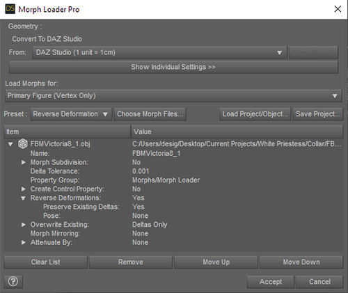
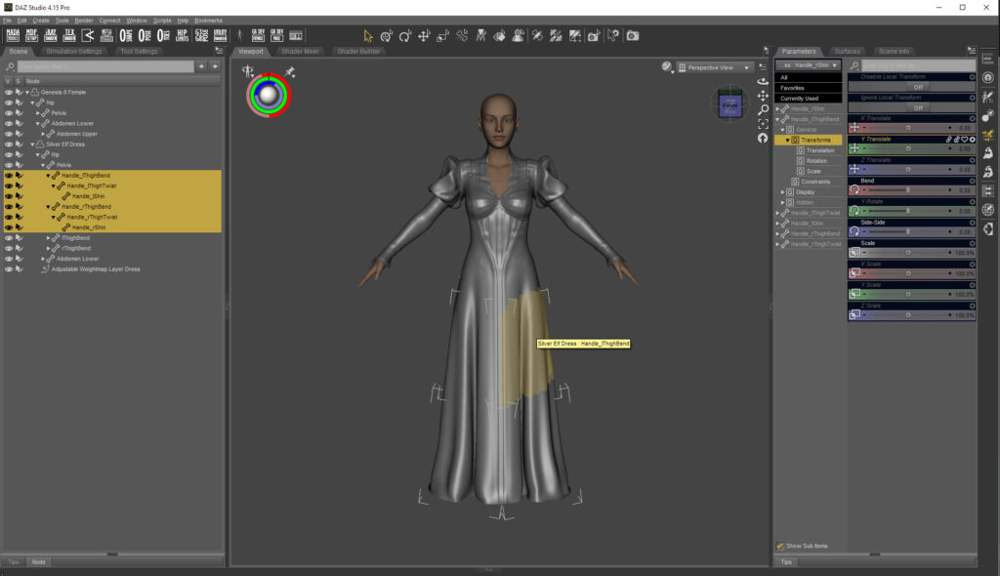

Welcome to Daz University Content Creation Docs
We have developed this site to help you to be the best Daz artist possible. You will find reference guides, tutorials, and tools developed to improve your skills and streamline your processes. We will and are continually looking at what training materials and resources we can create to help you learn and develop your skills and talents. If you succeed, we all succeed.
Here at Daz, we have a great team that is working long hours to review, test, coordinate, and populate the store with all the products you are creating. Would you like to meet some of the Daz Content team? Click on the "Read More" button below.
DAZ Workflows
Content Creation Basics ↵
Installing Daz Studio
Use Daz Install Manager
You will need to set up an account to download Daz Studio. Daz Studio and Daz content can be installed multiple ways, but the easiest to manage for content creation is to use Daz Install Manager (DIM). Download the Daz Install Manager Here.
Installing Daz Content for Content Creators
Managing Daz content is designed to be convenient for users. They can install content directly from their Smart Content pane, using DAZConnect, the Daz Install Manager (DIM), or directly from Zips downloaded from the Daz3d.com website. But as a content creator, you have to be more careful with how you create and manage content folders. The Daz content management system is aggressive and will find content however it is installed. This can be frustrating for content creators because it may cause errors in their products th.
Manual Installing from Zip files
- Zips give you the most control over your folder structure
- Allows you to isolate content for testing
- Our Quality Assurance Team installs content they are testing
- Working with zips is the best way to make and test individual products and testing, but is not convenient for managing a large content library
DAZ Install Manager (DIM)
- Recommended for installing Daz Studio, updates, and most products
DAZCentral with DZConnect
DAZConnect is not recommended for content creators. It may be the most convenient way to install content for users, but you have no control over the folder structures. An added Digital Rights Management system also scrambles content locations so it is almost impossible to isolate products for testing.
Creating a clean content Library for testing products
To test your product, you want to do it in an empty environment. It is easy to bump a parameter, test a texture, and unintentionally create a dependency on another product while you are working on content. No warnings will appear because the content manager can find this content in your content library. This is a benefit for content users, but frustrating when you are creating content because users may see errors you never did.
- The Daz content management system is aggressive at finding
- This works best on a second computer
Adding a Product as a separate Content Library
Setup Daz Studio for Content Creation
Daz Studio's default layout is made for content users, not content creators. To access content creator tools you will want to customize your workspace.
Change layout to City Limits
- The City Limits Layout shows the most tools
- Window > Workspace > Select Layout > City Limits

Change Navigation Hotkeys
Add custom script actions for frequent tasks
- Loading the dev load genesis figure
- accessing LOG file
- Frequently Used Scripts
Ended: Content Creation Basics
Tools ↵
Mesh Tools ↵
Morph Loader Pro
Morph Loader Pro is used for loading morphs onto a character or prop. It is a workhorse for building Daz Content, especially for characters, clothing, and hair. Like many content creation tools, Morph Loader Pro is not visible in the default layout. You should change to a more advanced Daz Studio layout for content creation. City Limits is a good choice.
Morph Loader Pro works with OBJ files. The vertex count must be the same and the vertex order must match. It is not uncommon to lose vertex order in importing and exporting from software.
The Morph Loader Pro Interface
Common Settings
Saving and reusing presets
Importing and exporting and OBJ from Blender
Blender is a powerful modeling tool but its default OBJ import and export settings will change the daz vertex order. This breaks the content for Morph Loader Pro and can be very frustrating. You need to preserve vertex order on import and export.
Fixing Broken Vertex Orders
Transfer Utility
Transfer Utility is one of the main rigging tools for Daz Studio. Transfer Utility is often the first step for rigging if you are making characters, clothing, hair, jewelry or accessories. Unlike other rigging workflows where you add bones and create weights from scratch, Transfer Utility binds objects to a parent figure's skeleton and transfers the parent figures weights automatically.
This means you can add a clothing OBJ to Genesis, run transfer Utility, and the clothing will follow. The difficulty comes in cleaning up the transfer so that you get good behavior however users play with the content.
If you are setting up a character or prop from scratch you will often want to use the Figure Setup Tool.
Ended: Mesh Tools
Ended: Tools
Characters ↵
Character Creation First Steps
Important Concepts
What is Genesis?
- Genesis is an avatar system.
- Genesis “characters” are blendshapes, stacked onto a unified base topology and rig.
- Genesis has a fixed topology. It cannot be changed. There are ways to temporarily replace areas of the model with new geometry called geografting used for tails, wings, etc. discussed elsewhere, but it still relies on matching topology.
- Genesis figures have one set of skinning weights and they cannot be altered. Likewise, the figure’s bone list also cannot be altered. Joint center points, however, must be edited to be in the proper location for characters that need different limb lengths, etc. note: our Adjust Rigging to Shape tool automates this process.
- Genesis Bone orientations can be altered, but generally should not be. It causes problems with posing and animation.
You can change proportions and shape quite drastically while character sculpting but the overall pose of the character needs to match the original genesis mesh.
What makes up a Genesis “Character”?
A Genesis character will generally consist of the following components.
- A low-resolution character blendshape
- Fits around the volume of a high-resolution shape.
-
Split into head and body shapes inside Daz Studio.
-
A high-resolution character blendshape
-
contains HD details not captured by the low-resolution model.
-
Separate navel and nipple blendshapes - that will be loaded additively to the core figure navel and nipples in our software. They should not be a part of either the high or low-resolution character shape.
-
Pose space corrective blendshapes for the body - once the joint centers have been moved into proper position for the low resolution character shape, the figure joints are then posed to positions where a sculpted corrective already exists in the base and:If the posed shape is found aesthetically insufficient, a custom one for that character is created. These are then hooked up with set driven logic.The common corrective amounts range from 20 - 40 correctives, depending on how far the character deviates from the base.
-
FACS based expression correctives for the head - the core figure has a set of FACS based expression blendshapes. Often these will not perform optimally for a new character face shape and correctives for some of the targets will have to be made.
-
Tear geometry fit shape - Genesis comes with a separate “tear” geometry add-on that fits around the edge of the eye socket and over the eyeball. Often with new character shapes this will not fit properly, and a custom character fit will have to be made.
-
Eyelash geometry fit shape - Genesis comes with a separate “eyelash” geometry add-on that follows the edge loop of the eye rim. It too sometimes performs poorly with new character shapes and requires a custom fit be made.
-
Body shape set corrections - Genesis has a set of core body and head shapes that are sold. We do try to at minimum correct the worst-performing shapes in the sets.
-
Normal map exports - Because the low and high-resolution character shapes are sold separately, we bake a set of normal maps from the final character files, high to low, to ship with the low-resolution character product. Safest to do this at the end of the process.
Character Sculpting
-
Scaling - Keep character blendshapes the same scale as the base, so all characters have a uniform volume. Otherwise, blendshapes on the figure will be too strong, or weak.
-
When you want a character to be bigger or smaller (ie a child or a monster) you still sculpt it at the same scale as genesis. Then we will scale it in Daz Studio. It might be strange to have giant babies and tiny monsters, but our avatar system works better with normalized scales.
-
Proportion Changes - When it comes to changing the proportions of your character we have found it is best to rough in the proportions of the character in Daz Studio in the beginning. We have morphs and scaling properties available for head scale, hand scale, feet scale, limb lengths, limb thickness, etc. and this tends to be cleaner than doing the adjustments in another tool. Make sure the 1chin area is aligned with the Genesis base chin, letting the feet go through the floor or float above the floor (see video starting around 1:00 for an explanation)
-
Landmarks - When sculpting, landmarks are important: lip lines, eyelid edges, navel, need to be maintained between all shapes on Genesis for blend stacking, texture alignment, and accessory elements (eyebrows, eyelashes) to work successfully. Every blendshape has to use the topology in the same basic way.
-
Landmark Drift - It is best to avoid landmark drift, topology dragging, or pinching etc. This is the cleanest method for having fewer issues later that would require a custom corrective for other shapes, expressions. or bends, etc. You can get around being this strict while sculpting if you plan later to manually fit a cleaned version of our base topology around, re-project the details and clean up any errors at the end.
-
Mesh Resolution - We usually sculpt a character at either 5 or 6 divisions of our base mesh in Zbrush for right now. (4.2m – 16.7m polygons). We ship both a low cage topology blendshape, and an extracted higher detail difference blendshape of each character. The two are then stack-able to achieve the final character. It is important that high poly sculpt be animation clean as well.
-
Alignment - Before exporting, make sure the head is aligned properly. This is important because we split the character sculpt into a head and body shape.
-
See the video starting around 2:50 for an explanation
Basic Workflow
We highly recommend a quick test of the first 3 steps and send us your high resolution mesh. We will verify it is still compatible with our mesh before you put any substantial time into a sculpt.
-
Video showing steps 1 and 2
-
Load the target figure mesh (Genesis 8.1 Male or Female) and rough in the body proportions. This needs to be done with the Dev Load version of the mesh that loads without any morphs applied and doesn’t have the eyelashes or tears.
- Make sure to pay attention to the notes in the “Character Sculpting” section above before proceeding
-
Export the cage resolution mesh to OBJ
-
Easiest to use the script that we include in "/People/Genesis 8 Male/Developer Kit/" for exporting OBJs
-
Import into ZBrush (or the tool of your choice), subdivide in ZBrush to the desired resolution and sculpt the character shape (making sure to avoid workflows and tools that break vert and facet compatibility with the original mesh, such as breaking it up into subtools)
-
Export the shape (at the desired resolution) to OBJ
-
Use Morph Loader Pro in Daz Studio to import the shape as a morph target at HD resolution.
-
IMPORTANT: The shape you are working with throughout this entire process should not have navel or nipples included. Those will be created/loaded later
-
Apply a tiling texture to the surfaces of the figure and set your morph to 100%. You are looking for areas that distort badly in order to identify areas the shape needs to be fixed. If there are problems then go back into ZBrush and slide geometry around to remove the bad distortions and bring it back in as a morph. The original morph can be deleted or replaced.
-
Once you are satisfied there isn’t too much distortion in the sculpt you will need to build the base resolution morph. The most basic method is by doing the following:
-
Set your morph (from the previous step) to 100%
- Set to base resolution, export cage version of the mesh
- Set to high res at SubD level 2 and export to OBJ. This will be used as a reference for fixing the volume of the base resolution morph
- Load the two meshes into a modeler, subdivide the base resolution version and place the subD level 2 (reference) mesh in the background. You should see all sorts of areas of the mesh where the high-resolution morph is poking through the base resolution mesh
-
Pull the geometry of the base resolution mesh out to match the volume of the reference mesh. Pay special attention to areas around the face such as ears and lips
-
With the optimized base-resolution and high-resolution versions of the character done you are ready to load these into Daz Studio as morph targets. You will end up with 4 morph targets: body, head, HD body, HD head. The naming convention is consistent so it is easy to follow. Substitute your character name for Victoria in the following example:
-
Body - FBMVictoria8_1
- Head - FHMVictoria8_1
- HD Body - FBMVictoria8_1_HDLv4
- The final number indicates subdivision level
-
HD Head - FHMVictoria8_1_HDLv4
- The final number indicates subdivision level
-
To load the morphs:
-
Apply Head Split DFormer
- Launch MLP and add base resolution morph twice
- First one will be the head morph, name per instructions above
- Set “Attenuate By” to the weight map and use default setting of 1 for the Strength
- Second will be the body morph, name per instructions above
- Set “Attenuate By” to the weight map and set Strength to -1
- Click Accept
- Dial head and body morph, making sure to also verify the head split is good
- With both head and body morph set at 100%, launch MLP and add the HD morph twice. On both:
- Set Morph Subdivision to Yes, Built Resolution to 4, SubD Mapping to ZBrush (if subdivided in ZBrush, otherwise leave default)
- Set Delta Tolerance to 0.0001
- Set Reverse Deformations to Yes
- First one will be the head morph, name per instructions above
- Set “Attenuate By” to the weightmap and use default setting
- Second will be the body morph, name per instructions above
- Set “Attenuate By” to the weightmap and set Strength to -1
-
Click Accept
-
Fix issues that inevitably come up at this point, such as teeth and eye problems Generally the eyes and inner mouth should not be affected by the head morph other than to be moved into place, possibly some scaling if necessary
-
Load base resolution OBJ as reference for where teeth and eyes should be
- With Geometry Editor tool select Teeth and Mouth surfaces
- Select both head morphs (base and HD)
- Run “Clear HD Morph Deltas (Faces)” script
- Compare position of mouth and eyes to reference OBJ
- If position now needs to be fixed it could be done in DS or in an external modeler
- To do it in DS, create a dFormer, create weightmap that only affects the part you want to move, move it into place and export to OBJ. Delete dFormer
-
Reload fixed head morph, making sure name matches so it will replace the current oneSave morph assets by running
-
Save Morph Assets script
-
Set Asset Directory to the project directory
- Set Vendor Name to “Daz 3D”
-
Set Product Name to the name of the character, making sure to use “_” instead of a “.” (ie Victoria 8_1)
-
Once the sculpt is loaded in and fixed up properly you will move on to the rigging portion of the process
Rigging A Character
"Rigging" a Genesis-based character involves the following:
-
Moving the bone positions relative to the mesh changes of the character shape
-
Joint Correction
-
Morph Correction
KEEP IN MIND:
Sometimes a problem is caused by reckless sculpting (such as not maintaining landmarks properly or by sliding geometry around). Often it is best to go back into a modeler and fix the problem (while maintaining the original sculpted shape). As an example, if you find an area that is problematic with multiple morphs and/or joint bends you may want to save yourself time and fix the sculpt once instead of fixing each problem
Other times you will find that building custom corrective morphs for a problem will be necessary. The number of correctives you will need to create is going to be different with every character and obviously will be highly influenced by how much you are changing the shape from the base mesh and how carefully it was built. Some characters end up with 0 corrective morphs for joints, some end up with 30 or 40. In addition, it is pretty common to end up with another 20 to 60 corrective morphs to fix morph issues with various morphs on the genesis figure. Again, this number fluctuates based on how much change is introduced in the character shape and by how carefully the sculpt was done
Moving The Bones
Moving the bone positions relative to the character shape is a critical first step in rigging a character. This needs to be done on the base resolution version of the body and head morph and should be done one morph at a time. Below I will outline the basic steps when doing this manually. To get faster, more optimized results you can also consider purchasing and using this product instead.
- Dial the base resolution body morph to 100%
- Activate the Joint Editor Tool, right-click in the viewport and go to Edit > Adjust Rigging to Shape
- Right-click on Neck Upper and Uncheck Selected and Children
- Uncheck face groups related to the head (Head, lEye, rEye, LowerJaw, Tongue, UpperJaw)
- Click Accept
- Put Parameters Pane into Edit Mode, right-click on the body morph you dialed up and adjusted the bones to, click on ERC Freeze
- Make sure the list is only populated by body bone movements and click Accept. You should now be able to dial the morph up and down, watching the bones move with the shape
- Dial off the body morph and repeat steps 1-7 above but with the head morph, making sure to invert what you have selected in the dialog (this time you want all bones unchecked except starting from Neck Upper, and you only want the head related face groups)
Joint Correction
Correcting joint bend issues refers to moving the bone positions relative to the mesh changes and then evaluating every bone rotation to find issues. When an issue is found you evaluate what the best course of action is for fixing it.
IMPORTANT: The rigging should only need to be done on the base resolution morphs. The HD morph is just the details so won’t need much work done specifically for it. If details are sculpted in on the knees and elbows then a common corrective we make is one to smooth the knees and elbows when they bend. All HD work will get done after all the base resolution work is done.
Common workflow would be:
- Dial body morph to 100%
- Start at toes, check each joint for bend issues, working your way up to the lower neck bone.
- To check for issues, rotate the bone on each axis, one at a time, from minimum value to maximum value
- To fix an issue:
- Export to OBJ the problem pose (ie lFoot Bend Up). Naming is very important and should follow the same naming formula every time.
Morph Correction
The rigging process doesn't stop there, however…
Next, we evaluate how the character interacts with morphs on the face and any of the body ones that make sense to support (ie. breast morphs for the female). The morphs you need to check your character against are all either included with the Genesis mesh you are building for (look for purple or red properties) or are in the following products that you need to install:
- Genesis 8 Female Body Morphs
- Genesis 8 Male Body Morphs
- Genesis 8 Male Head Morphs
- Genesis 8 Male Expressions
Morphs are split into two main types: Posing and Shaping. They can be found under the Panes by those names or by navigating in the Parameters Pane to the “Pose Controls” group for Posing and the “Actor” group for Shaping.
Posing Morphs
Shaping Morphs
Final Setup
- Y Traslation
- Scale
Character Types ↵
Dial Spin Characters
Making characters with Daz Parameters like an avatar in a video game.
Process
- Load the base figure
- Dial parameters
Saving the Character
Additional Morph Parameters
Dial spin characters can be built using default parameter morphs, but for more flexibility we recommend installing our official Head and Body morph addons. A user must own these products to work but they are best sellers.
Recommended Morph Product Addons
- Genesis 8 Female Head Morphs
- Genesis 8 Female Body Morphs
- Genesis 8 Male Head Morphs
- Genesis 8 Male Body Morphs
Recommended Training
- Dreamlight's Genesis 2 Training Female Character Creation Tutorial - Turn Your V6 Characters Into Cash. Although Genesis 2 is quite old now, the techniques of loading a reference image and matching it with morph parameters still works.
Character Modeling
Making morphs for characters
Recommended Blender Training
- Sickleyield's How to Create a New Custom Daz Studio Character. Showcases working with morphs in blender, and covers the tricks to import and export an OBJ from blender without losing vertex order. You can also get Sickleyield's full Blender Content Creation for Daz Studio Bundle for additional training on props and custom characters.
Tier One Daz Character Workflow

Ended: Character Types
Genesis 9 ↵
Genesis Character Creation Pipeline
Character Planning
-
A good face is most important.
-
Use Reference images.
-
Check Example characters.
Test your pipeline before you begin
-
Export Genesis 9 Dev load OBJ from Daz.
-
Quick Sculpt in app testing your brushes and tools (Zbrush, Mudbox, Blender, etc.).
-
Load OBJ as a morph onto Genesis 9 using Morph Loader Pro.
-
If the morph does not load, your pipeline is broken. Make sure the vertex order of the OBJ remains the same for Morph Loader Pro to load new character morphs. Do not remove geometry from the base mesh.
Base Mesh Export
-
Start from the G9 Devload figure.
-
Rough in proportions using HD Body morphs and HD Head Morphs. These morphs are carefully crafted and will minimize distortion in your character.
-
Export for Zbrush .
- GoZ
- OBJ Export
Sculpting Process
- Keep the mesh symmetrical. Add asymmetry as another morph.
-
Go as far as you can on the base resolution.
-
The base resolution does most shape work; HD morphs look pretty.
-
Proportion changes for the character can be dramatic (elves, trolls, infants, gorillas, etc.) But the mesh should not be stretched.
- Move the mesh proportionally.
-
Along the normal axis is best (ALT + Move Brush in Zbrush)
-
Be careful of bumping sensitive areas like eyelids, lips, and nails while sculpting.
-
Keep asymmetry, nipples, navel, scars, and skin damage as layers so they can be toggled and added as new morphs.
Zbrush Tips
-
Use the standard brush with a sharp fall-off over the Dam Standard brush.
-
Use subdivision levels 3 or 4 for detail on Genesis 9.
-
Zbrush smoothing algorithm will shrink the base mesh.
Sculpt for Rigging
-
The Genesis Weight maps are locked and cannot be changed.
-
When you move the Genesis mesh, the bones will move as well.
- If you stretch the mesh to make a new shape, it will stretch every item of clothing the character wears.
- To check for stretching, load a tile texture to see if you have distorted the mesh. The shape can look good, but stretching breaks compatibility with props.
HD Morphs
- They are only allowed for content sold on the Daz Web Store.
Genesis 9 Character Sculpting Process
Load Genesis 9 from the Developers Kit
- People > Genesis 9 > Developer Kit > Genesis 9 Dev Load
Export eye and mouth geometry followers to help rough in proportions.
- People > Genesis 9 > Anatomy > Daz Originals > Base Anatomy > Genesis 9 Eyes
- People > Genesis 9 > Anatomy > Daz Originals > Base Anatomy > Genesis 9 Mouth
Rough-in Character in DAZ Studio
Keep mesh symmetrical.
- Can start from Base Feminine or Base Masculine Shapes
- Genesis 9 Head Shapes
- Genesis 9 Body Shapes
The following morphs should NOT be included in the character shape. You must reverse them from the character shape on reimport if you activate them now.
- Asymmetry
- Navel
- Nipple
- Mouth Realism
- Teeth
- Eyelash
-
Eye morphs that affect eyeball geometry (Pupils and Iris )
-
Proportion
Save a scene file of the character.
Export OBJs for ZBrush (or the application of your choice)
- Change UVs to Single UDIM UV before export
-
Surface Tab > Editor > UV Set > Base Single UDIM
-
Export mesh to ZBrush using one of two methods:
- Use GoZ to send Genesis 9 Dev load to ZBrush. It will automatically put eyes and teeth as separate subtools.
- Export OBJs manually using default Daz OBJ export settings with resolution set to Base.
Sculpt in ZBrush with Layers
Keep character symmetrical for everything but skin details and fine wrinkles. Build a new layer for any other asymmetry (crooked nose).
Do not sculpt height, limb, neck, or torso proportion changes.
Do not sculpt (for now)
- Nipples
- Navel
- Eyes
- Teeth
Use Landmark Textures for Sculpting Reference
Can be found in DAZ 3D Library\Runtime\Textures\DAZ\Characters\Genesis9\Base\DevKit
- Genesis9_Detail_Atlas_F.jpg (Female Landmarks)
- Genesis9_Detail_Atlas_M.jpg (Male Landmarks)
Mesh Areas Sensitive to Sculpting
- Eyelids
- Lips
- Fingernails
- Toenails
- Neck area (do not slide mesh around)
Export OBJs (Question: GoZ back?)
Export base resolution OBJ with Cage active
Export high-resolution OBJ of Genesis 9 sculpt
Load character OBJs onto Genesis 9 in DAZ Studio
Use Morph Loader Pro HD plugin
Check for mesh issues
- thin eyelids
- lip pinches (open jaw to see)
- Base Resolution Cage should wrap around HD character.
- Adjust rigging to shape and test some poses
Decide on the character's presentation name
The name will be used for future steps. It can change later, but it is extra work to rename all the files.
Create a folder for all character files. Add this folder as a new base directory.
Split Head and Body base resolution and HD Morphs
Base resolution morph should wrap around HD morph
Use the Genesis 9 Headsplit DFormer to split head and body morphs using Morph Loader Pro.
- Genesis 9 > Developer Kit > Genesis 9 HeadSplit DFormer
- Morph Loader Pro > Attenuate By (right click) > Weight Maps > D-Former1 > Influence Weights
- Set Attenuate By Strength to 1 for Body morphs, -1 for Head morphs
Add proportional morphs to set character height
Create a character control dial
Add proportional morphs and ERC them to the character dial
Additional sculpting
Sculpt any other proportion morph fixes
Sculpt Custom nipple, navel, and teeth morph if needed
ERC additional morphs to character dial
Texturing
You can assemble a character using only the existing Genesis 9 MAT presets. You may also customize these textures.
Skin Textures
Start from provided Genesis 9 MAT textures (01-04 for Feminine and Masculine)
- Genesis 9 > Base Materials > Genesis 9 Base Feminine MAT 01
- Genesis 9 > Base Materials > Genesis 9 Base Masculine MAT 01
There must always be a skin texture without eyebrows. Texture-painted eyebrows are not required.
Use the micro detail normal maps.
- Genesis 9 > Base Materials > Genesis 9 Base Feminine Skin Details MAT
- Genesis 9 > Base Materials > Genesis 9 Base Masculine Skin Details MAT
Genitals
Fix genital seams on the torso map. Tier 1 characters must support Male and Female genitals.
Bake torso textures to the genitals with Genital Map Bake UVs.
- Surfaces Tab > Genesis 9 > UV Set > Genital Map Bake
Eye Material
There are 16 Eye Mats available to choose from.
- Genesis 9 > Materials > Base Materials > Eyes > Genesis 9 Eyes MAT 01 - 16
Only create a new eye MAT if needed for the character. You may modify the Eye MATs for redistribution (Question: or can they?)
Mouth
Use the default mouth texture unless the character requires something different.
Eyelashes
Do not texture eyelash colors as individual hairs.
Eyelash colors can be modified using shader tints or textures with the following:
- Solid texture color card fills.
- A root-to-tip gradient that fills the eyelash card.
This allows all Eyelash library alphas to be used with custom colors.
Save a character preset
Save custom morphs
- Save As > Support Asset > Morph Asset
Save character preset
Run Validator on character content library
Package the character folder as a Zip and submit it to PASS
Character Sculpting
Setup
Exporting the model for Zbrush
- DAZ Studio: Do export at Base resolution with the Single UDIM UV set. It is important to work in Zbrush with the base resolution model, and Zbrush works best with the Single UDIM UV set.
Character Sub-figures (Eyes/Mouth)
- DAZ Studio: Export Eyes and Mouth models separately. Eye and Mouth geometry should be exported individually from the G9 base model, at Base resolution.
- DAZ Studio: Eye and Mouth geometry are sub-tools. Any sub-figure geometry should be loaded into Zbrush as further subtools, and generally only moved or scaled globally.
Using Morphs As Starting Point
- DAZ Studio: Do use the Base Feminine and Base Masculine as starting shapes. They are example characters and, their shapes are free to use as exported starting points for character sculpting. They should not be extracted when loading your finished character blendshape. Your final character should be a standalone shape on the G9 base figure.
- DAZ Studio: Do use the morphs in the following packages to create starting shapes. Merchant resource blendshapes can be a good way to jump-start a shape before further character sculpting in an external program. The following packages are allowed for use this way.
- G9 Starter Essentials.
- Head or Body morph packages.
- Note: Blue morphs on the figure are merchant resources.
Character Sculpting Process
Feature Landmarks
- Zbrush: Do use the landmarks texture map. G9 comes with two landmark texture maps (masculine and feminine) based on the Single UDIM UV set. This map gives a visual indication of where landmarks such as lip borders, brows, elbows, knees, etc, are located on the topology.
- Sculpting landmarks consistently helps with shape and texture continuity across diverse characters.
- Landmarks such as the brow will help you determine where the card-based eyebrows will end up on the final character. Move the mesh accordingly.
Head Proportions
- Zbrush: Don’t change the size of the eyes unless… Standard human eyes do not deviate much in size or shape, and G9 eyes are measured to be within the average.
- This does not apply to stylized characters, e.g anime, cartoon, other.
- This does not preclude changing position.
Body Proportions
- Zbrush: Don’t change proportions via sculpting unless… Most characters should be sculpted in a proportion that maintains the limb lengths and heights of the base figure.
- This ensures a universal height for all characters. Some characters would by their nature not work with this rule, but they are likely to be outliers.
-
This does not preclude the changing of volume, e.g, thinner or heavier characters.
-
DAZ Studio: Do use the Proportion dials at the end of character setup. Proportion dials should be used at the end of character creation to create a proportion formula preset dial for the character. This decouples height from the character and gives the end user more options.
Asymmetry
- Zbrush: Don’t sculpt extreme character asymmetry unless... Most characters should avoid extreme degrees of asymmetry in their shape as that locks the character into an appearance customers may not appreciate.
- Asymmetrical fine details are generally fine. These would be small HD folds, lines, etc.
- Any required character-specific sculpted asymmetry can and should be included as an additive shape meant to work as an optional blendshape. Generally this means it should be done as a separate layer. This would include things such as:
- Scars, burns, boils, etc
- Uniquely extreme attributes too specific to be approximated with the base general set.
- DAZ Studio: Do use the asymmetry blendshape options included in the figure base to create a preset. Should you require more drastic asymmetrical aesthetics.
- There are many asymmetry blendshape options included with the G9 base.
- You can formula these asymmetry options to a secondary character parameter dial. Example: ‘Victoria 9 Asymmetry’, which would host all parameters you chose as an optional control.
- DAZ Studio: Don’t use the asymmetry blendshapes for non-approved purposes. Asymmetry morphs should not be used in expressions or other posing functions. These are intended to provide asymmetry to a character shape only.
Navel and Nipples
- Zbrush: Don’t sculpt these as part of your character design. The navel and nipples on G9 are seperate shapes.
- Zbrush: Do sculpt any custom navel and nipple shapes as a layer. Sculpting the navel and nipple as a seperate layer in Zbrush allows easy extraction of those shapes at the end up the process. Those elements should be positioned according to the appropriate Landmark texture map.
Eyes
- Zbrush: Don’t use brushes to sculpt on the eye topology. The eye figure is best adjusted as needed globally; translation and scale. Sculpting them in a manner which distorts their overall symmetry will cause issues with their rotation within the socket.
Sculpting Techniques To Avoid
- Zbrush: Don’t distort the topology in ways that only locally slide. An example would be using a Move brush and locally dragging the model. Such distortions will ultimately make their way into clothing via shape projection, distorting things such as straps and buckles.
- Zbrush: Don’t use brushes that cause topological pinching/compression. Zbrush brushes such as Pinch or Dam Standard compress and distort the topology in ways which will ultimately make their way into clothing via shape projection. It is much better to use sharp Standard brushes to get similar effects.
- Zbrush: Do clean up any topological pinching/compression. If, at the end of the sculpting process, you notice topological compression in areas, a good way to clean that up is to:
- Store a Morph Target of your final sculpt shape.
- Go down to level 1, and then Subtool Pane>Project>Reproject Higher Subdiv
- Morph Target Pane>Switch to change back to your original sculpt
- Using Morph brush, you can brush that clean projection only on the areas that need it.
Character Setup
Create the Low Resolution Blendshape
- Zbrush: Do Create a low resolution blendshape. Characters in DAZ Studio are often split into a low resolution blendshape (SD or cage resolution) and high blendshapes (HD or any higher levels above 1). This is similar to a low poly bake object. There are two potential methods for creating this shape.
- The ‘Cage’ option in Zbrush. Geometry palette>SDiv set to 1, Cage is next to it. This option moves the cage points into a position they would be if the realtime subdivision state of the model was attempting to approximate the sculpted volume
- The pros of this method are that it’s easy, and fast.
- The cons of this method are that it sometimes produces a cage model that is too erratic or ‘crunchy’ to use.
- Manually sculpting the low-res model to fit around the high-res sculpt (see this video for an example workflow).
- The method to do this in Zbrush, is to: duplicate sculpt subtool, lower SDiv level to 1, Del Higher, open Dynamic SubDiv, activate Dynamic. This puts the model into dynamic Subdivision Surface sculpting mode, allowing you to sculpt the model to fit around the HD sculpt in the background. Note: try filling the model with a color to create contrast to allow you see the overlap easier.
- The pro of this method is that it can be as accurate and clean as you make it.
- The con of this method is that it is slower and manual work.
- Suggestion is to try Cage first, inspect the model, and if that didn’t produce a good result, move to the manual method.
- Load the Blendshapes
- DAZ Studio:
- Corrective Blendshapes
- DAZ Studio: Do connect character specific correctives so that they are driven by the base correctives. Avoid connecting correctives directly to the bone rotations when an existing corrective of the same degree already exists.Better to tweak expression recipes instead of correcting for each individual morph in FACS. It is far too complexCustom Morphs For The CharacterDAZ Studio: Do group custom morphs the same as the character. For example the Victoria 9 character is located in “Actor/People/Feminine”. If a custom nose morph is made to work with her face specifically then it would be grouped under “Actor/Head/Face/Nose/People/Feminine”
Texturing
Skin Textures
- DAZ Studio: Do use the micro detail normal maps with your skin materials. High quality micro detail normal map textures are included with G9 base package.
- They are available to anyone to use in material presets only for standard humanoid characters.
- These textures are not a merchant resource, and are not free to modify and redistribute.
- Texturing App: Don’t paint brows into your skin textures unless... Brows generally shouldn’t be painted into the skin texture maps. If they are, a browless texture option should always be included so the texture set can easily be used with the geometry-based brows.
Eyes
- DAZ Studio: Use the Eye Library in your MAT presets. Characters should by default use the appropriate free eye material preset in their character MATs
- Texturing App: Don’t make new eye textures unless… Characters should only come with new eye textures and materials if a truly unique appearance is the goal, and an existing texture in the Character Essentials Library does not already cover that goal.
Mouth
- Texturing App: Don’t make new mouth textures unless… Characters should by default always use the core mouth texture and materials unless the character requires a unique visual effect.
Eyelashes
- Texturing App: Don’t texture eyelash colors as individual hairs. Eyelash colors can be achieved using shader tints, or textures with:
- Solid texture color card fills.
- A root to tip gradients that fills the entire eyelash card.
- This allows any of the Eyelash library alphas to be used with the color option.
Nipples
- Texturing App: Do create two torso textures. It is better if your texture comes with two sets of torso maps to support both the Feminine and Masculine nipple placements.
Normal Maps
- DAZ Studio: Do use the main normal maps channel in the shader for your character specific (medium normals) details. Fine details such as pores and such are added via the detail normal map.
MATs (Material Presets)
- DAZ Studio: Do include all the components in your character “All MAT” files. Character MAT files should include the following figures:
- Eyes,Eyelashes, Tear, Mouth, Gens m/f.
- DAZ Studio: Don’t include character specific normals in your “Skin” MAT files. Skin only MATs, or MATs not intended to inject character details onto the figure, should:
- Include the G9 base figure’s surfaces.
- Exclude the primary Normal map channel.
- Include detail Normal map channel.
Genitals
-
Bake torso textures to the genitals. A UV map is provided for the G9 base figure which aligns to the UVs of the genitals. This allows texture baking from G9 Torso textures to a Genital UV map, giving a seam-matched head start for the gential textures.
-
Both genitals should be supported in all Tier 1 characters
## Posing
-
When posing it is necessary to remember that there is often more than one way to reach the same pose. Some combinations will work much better than others. If you see bad distortion with a pose evaluate if you can reach that same pose in a way that causes less problems
-
The thigh is a great example. If you want the thigh rotated out to the side with the toes pointing up that can be accomplished with a combination of Side-Side and Bend but it looks awful at the thigh joint. Side-Side and Twist, however, looks great
-
It is possible to build poses that push rotations beyond the set limits. Keep in mind that many joint rotations require a corrective blendshape to make them look correct when rotated to the limits. Turning off limits will allow you to push the rotation beyond but the corrective blendshapes will remain within their limits. For best results, avoid turning off limits except when absolutely necessary
-
Poses should not include the “Heeled Shoe” pose controls (only shoes should use it for their poses)

What is ‘Rigging’ for Daz Studio Characters?
The term rigging is generic and is used too broadly to describe various different aspects of animatability.
FK Rigging
The core mechanical stuff that bends a limb.
Weights, bones, things which are set by the figure base at its creation, and are unchangeable for the lifetime of that figure base. No character edits the weight mapping or bone count/layout of the Genesis base. If they did, compatibility would be broken with add-on items.
IK Rigging
The constraints and links allow automatic animation to happen. E.g. linking a character's hands to the handles or pedals of a bike, and letting the motions of the bike drive the limbs of the person.
FK Correction Rigging
these are sculpting fixes created to address aesthetically poor character limb posing FK performance. This is primarily a sculpting discipline, with corrective blendshapes made against the posed result of the character + the genesis FK rigging. This is what we are referring to when we say “character rigging”.
The Genesis 9 Developer Kit
The Genesis 9 Developer Kit contains tools for creating characters, morph fixes, and textures.
Genesis 9 Dev Load
The base Genesis 9 character without any followers (mouth, teeth, eyelashes, etc.) or morphs active. The Dev Load character should be used to start any custom character. Exporting the Genesis 9 base shape as an OBJ instead of the Dev Load will embed the mouth, eyes, eyelashes, and eye moisture, breaking vertex compatibility for morphs. The Dev Load should be your go-to for all character work.
If you frequently work with characters, you want to add this preset as a custom action.
- Right Click on the preset > Create Custom Action...
Genesis 9 Hand Prop Sample
Genesis 9 includes anchor bones in the left and right palms for parenting gripped objects. The anchor bones do not affect the character geometry. This hand prop sample shows how anchor bones should be set up.
Genesis 9 Head Split DFormer
The head split DFormer is used to separate head and body morphs. Characters all should separate at the exact location in the neck so heads and bodies can mix and match. The Head split DFormer is used with Morph Loader Pro.
- Load Head Split DFormer onto the Dev Load Character
- Select Character OBJ
- Morph Loader Pro > Attenuate By (right click None) > Weight Maps > D-Former1 > Influence Weights
- Set Attenuate By > Strength to 1 for body morph
- Set Attenuate By > Strength to -1 for head morph
Video tutorial using Genesis 8, but the process is similar:
Landmark Material Presets
Landmark materials change the UV preset to Base Single UDIM and load a custom texture that shows anatomical landmarks for Genesis 9 Character sculpting and texturing. Most anatomical reference points are the same between masculine and feminine shapes, except for the nipple and eyebrow placement.
You must load one of these Materials before exporting it to ZBrush. The Base Single UDIM works much better with most sculpting applications. If the landmark textures look distorted, check if the UV Set has changed.
Genesis 9 Landmarks Feminine
Used for placing nipples and eyebrows for Feminine characters.
Genesis 9 Landmarks Masculine
Used for placing nipples and eyebrows for Masculine characters.
Genesis 9 UV Prep Pose
A utility Character pose to simplify texturing and painting UV seams. This pose opens the jaw, closes the eyelids, and spreads the fingers and toes. Usually, the character is not brought back into DAZ Studio with this pose, just the textures created on it. The pose can also be used to check for texture seams.
Our Quality Assurance team usually finds seams on ancillary maps like roughness, not on the base albedo map.
UVs
Genesis 9 UVs Default
The default Genesis 9 UVs. It should be the default for all characters. Other UV layouts are utility UVs to help assemble textures on this UV Map set.
Genesis 9 Force UVs To Unique UDIMS
Separates the Genesis 9 UVs onto different UDIM tiles. The default UVs overlap in the 0-1 UV space but use different material groups, so they do not mix. Unique UDIMS is for artists that want to work with UDIMs for sculpting and texturing.
Base Single UDIM
The Landmark Materials will load this UDIM. Helpful in sculpting in ZBrush and baking maps in xNormal. To manually enable this UV set:
- Surfaces Tab > Genesis 9 > UV Set > Genital Map Bake
Genital Map Bake UVs
Used for fixing seams on genitals for texture artists. Includes the border polygons connecting the torso UV to the genital UVs.
There is no preset for the genital bake UVs, so you need to activate them manually.
- Surfaces Tab > Genesis 9 > UV Set > Genital Map Bake
Ended: Genesis 9
Ended: Characters
Poses and Animations ↵
Pose Products
Pose products are some of our best sellers. If you know how to pose a Daz Character well, others.
But creating and saving a requires some technical expertise as well.
- Should the pose change the facial expression?
- Does the pose need to move the character?
- Does the pose need to push the limits of a character's flexibility?
Saving Poses Correctly
Useful Pose Plugins
There are many plugins to speed up the pose-making process.
Ended: Poses and Animations
Props and Environments ↵
Handprops
Setting up a prop
Parenting a prop to the hand
Converting a Daz Prop to glTF using Blender
glTF is a fast and highly compressed 3D format used in games, native web applications, AR, VR, and 3D ads. You can also embed glTF files in Microsoft Word documents or PowerPoint files.
Save prop as FBX with Embed Textures
- Load Prop in Daz Studio
- Export as FBX
- Embed Textures checked

Import FBX into Blender
- File > Import > *.fbx
- Standard Settings

Reset the Bone Pose
- Change to pose mode
- Alt + R to reset bones
- Alt + A to Apply as rest pose

Check Material is loaded
- Materials should be embedded from the Daz FBX export.
- Viewport shading to rendered

Export GLTF (file extension .GLB)
- File > Export > glTF 2.0 (.glb/.gltf)

Ended: Props and Environments
Clothing ↵
Clothing Tips
Build Clothing and Hair for the Genesis Base. NOT on custom characters.
The clothing will project from the base shape to the custom character, and then you can adjust the morph for the custom character. This is how clothing can be compatible with multiple characters.
A benefit of the Genesis Avatar system is sharing clothing between multiple characters. But this comes with challenges.
Plan Clothing for Rigging
Rigging a Daz clothing item can be difficult and time-consuming. Expert clothing creators take every shortcut they can. It starts from the planning and design stage. Some articles of clothing, like plate armor, may never deform correctly unless you follow some of these tricks.
Keep clothing geometry close to the base mesh
Tight-fitting clothing is easier to rig.
Loose clothing requires lots of corrections later in the process.
Keep details away from joint areas
Concentrate details on stable areas with less pose distortion
- middle of shoulder bones
- long thigh bones
- upper chest area
If clothing can be worn separately, it should be a separate model.
Chains, ropes, or ribbons attached at both ends are hard to rig.
Lose hanging chains, ropes, and ribbons are easier to work with
Use OBJ vertex group import. This is a trick to import selection sets from an external modeler as weights. Then you add bones to those already weighted parts. It can be especially useful for chains, ropes, and ribbons.
Avoid too many rigid parts.
They are a lot of work. Plate armor is hard!
Place rigid objects on single bones. Thinking about bones while modeling will help when rigging.
Move a belt buckle higher or lower to be on a single bone group. It will perform better.
Mesh Density
Lower-density meshes are easier to work with and perform better. Most people add too much resolution. Life will be easier if you go lower.
Fine details should be done in textures, not through modeling.
Mesh density should generally be about the same as the character base mesh.
Model for SubD. Daz Studio works well with subdivisions.
Hold edges with extra loops if necessary.
Retopologize simulated cloth to match Genesis mesh density.
Rigging high-density meshes is a nightmare and rarely works. Low resolution is usually better.
Modeling
Model clothing shape to match how the clothing hangs in the reference.
Model some wrinkles into the base. Simulating dForce will smooth the mesh overall.
Add cloth thickness to mesh, but do not include the backside faces. This is pretty unique to Daz Studio.
DO NOT cap clothing model ends (sleeves, collars, or pants). Our smoothing modifier explodes if you do.
Make UVs for Texture Artists
Make UVs so others can easily modify and create new textures.
Texture packing efficiency is not a priority for Daz Studio content.
Use flat UVs with vertical alignment for textures.
Group UVs by similar type, so they are easy to find in an image editor by a texture artist.
Make sure the texture is easy to modify in 2d image editors.
Cut UV seams where real-world clothing seams would be.
UVs can be updated after rigging, but we avoid it if we can.
Test UVs for distortion
Test with a vertical stripe and horizontal stripe pattern. If your mesh can hold stripes, it can support
General Clothing Rigging Guidelines
Rigging clothing in Daz Studio can be quite different from traditional rigging pipelines. Because Genesis is an avatar system, you are making sure the clothing works with multiple Genesis characters.
Clothing is rigged to the base character using Transfer Utility
Transfer Utility projects bone weights from one figure to another
Weighting a low res proxy object is more manageable.
Selecting Donor Clothing
You can transfer rigging from donor clothing and preserve JCM formulas. MAGIC!
Mada's Daz Original Clothing is a great starting place for donor rigging.
Select a donor outfit with the closest shape and latest date.
Transfer Utility with Presets Script transfers weights and Morphs.
Weight Painting Cleanup
Weights will already exist from Transfer Utility but may need cleaning.
Weight paint with Genesis Base Joint Correctives Turned OFF.
Matching Genesis' shape as it deforms is the goal. It will not look perfect yet. That will require Joint Corrective Morphs, which will come later.
Use the Add brush to paint weights. The Subtract Brush is unpredictable; it has to put weights somewhere, and it is hard to guess where they will go.
Test your weights in multiple joint positions.
If a rigid object is shared by two bones, weight rigid objects to one bone. Then, create a JCM for the second bone.
Turn Genesis Correctives Back on before building Joint Corrective Morphs.
Corrective Morphs
Export OBJs to your modeler to make corrective morphs.
Check mesh distortion using checker UV patterns.
For reference, you can export a posed character OBJ.
OBJs brought back into Daz Studio using Morph Loader Pro with Reverse Deformations active.
Heavier shapes require more correctives.
Correctives activate with Bones (Joint Corrective Morphs: JCMs) or Morphs (Morphs Corrective Morphs: MCMs). If your clothing morph has the same name as a morph on Genesis, it will activate automatically with that genesis morph. Other morphs you need to set up manually.
Adjustment Morphs Required for Characters (to be updated)
Common Corrective Morph Fixes
Under arms when the shoulders bend:
- down
- forward
- down + forward
Thigh bend
- forward
- sitting pose
- abdomen twist
Do not fight auto projection morphs. Just fix the broken mesh. In other words, don't try to fix mesh placement from a different character morph. As a clothing modeler, you cannot control how the character meshes deform. Just make it less broken.
If the pose crunches geometry, start from the base mesh to get clean deformations. This is useful for collars and belts.
The neck area is challenging to get right because there are a lot of bones in the area.
Use the smoothing modifier export/reimport trick!
Ways to save clothing
Figure Prop Asset
- Geometry data
- Shaders
- Materials
Wearable Presets
-
Do not affect Geometry.
-
It can be used for object presets.
-
Useful for clothing materials.
Reference Videos
Rigidity Setup
- Setting up rigidity, also cover a little bit of weightmapping but it isn't the primary purpose of the video so it goes fast.
Rigid Follow Nodes
- The basics of working with Rigid Follow Nodes
Layering Clothing
- Setting up layered clothing with smoothing and a single preset to load both at the same time.
Clothing JCMs
- Instructions on creating Joint Corrective Morphs (JCMs) to correct issues with clothing when a joint is rotated.
Saving JCMs
- Sometimes morphs on the figure get projected to follower content (ie. clothing or hair) and messes things up. If you are having that problem usually you would fix the morph, but sometimes the fix is to turn the morph off so it doesn't do anything.
- This video is merely showing you how to shut the morph off.
- Simply turn off auto follow and change the content type of the morphs so they will save properly when you save the follower content.
Fixing Morphs on Clothing
- This video shows how to fix morphs on clothing, specifically focused around replacing auto-projected morphs.
- 0:16 Important information and setup
- 2:01 GoZ Bridge to ZBrush
- 3:02 General Method Using Morph Loader Pro With Any Modeler
- 5:15 Saving
Control Hierarchical Material Presets
- How to control which surface groups make it into a hierarchical material preset (HMAT).
Saving Material Preset
- Simulation settings automatically get included when saving material presets for dForce clothing. Most of the time this is a bad thing so this video shows how to avoid this issue.
Grouping Properties
- Shows 3 ways to modify a property's group (path).
Modifying Surface Groups
- Shows how to customize surface groups in DAZ Studio.
Saving Your Clothing
- Important steps for saving your clothing to a file
Cleaning up Clothing Details
- Summary of getting detail pieces on clothing to work well.
- Make sure to fix weightmap issues first before dealing with morphs. I show the type of workflow that will serve you well when working on clothing with Genesis 3.
Using Smoothing to Fix Clothing
- Using the smoothing modifier to fix up morph problems in clothing. DAZ Studio automatically projects morphs from Genesis figures to clothing but the results aren't always the best. This shows how to use tools included with DAZ Studio to fix up the morphs.
- WARNING: Using this method to fix issues is a little heavy handed and can cause issues of its own. For instance, if you rotate the right thigh in to the limit and apply smoothing to fix poke through on a pair of shorts, you are causing the right thigh to intersect with the left and what you can't see is now you are pushing the geometry on the left thigh of the shorts inside the leg. You are fixing one issue but causing another.
Fixing Unselectable Geometry
- How to fix unselectable geometry in Daz Studio.
Load UV Maps
- Tutorial on loading UV maps in DAZ Studio, either to replace existing or to provide additional UV maps beyond the base set.
- Shows 3 methods: Load UV Set, Update Geometry, and Transfer Utility.
Fixing Embedded Geometry
- If you have geometry or modifiers or anything else embedded in your DUF file, this video shows you how to fix it.
Hiding Geometry
- A method for automatically hiding geometry on the figure when you fit a wearable item to it.
Controllable Dynamic Shapes
- A brief introduction to using the Controllable Dynamic Shapes product that uses OptiTex's Dynamic Clothing plugin for DAZ Studio.
- Please note that this product may have problems if used in a version newer than DS 4.6
Clothing Creation Basics
Workflow by Mada
01 | Basics : Workspace Daz Studio
Length : 3:32Customize your workspace to use the same navigation/shortcuts as your modeler.
- Locate the item you want to make an action for. This can be a figure, material file, pose file, etc., as long as it is a DAZ Studio script file format.
- Right-click on the thumbnail and choose Create Custom Action from the menu.
- Press F3 to open the Customize Daz Studio window. At the bottom, under view controls, you can change the navigation scheme to match your modeler or preferred navigation method.
- My preferred scheme:
- Alt + Left Mouse button: orbit
- Alt + Middle Mouse button: Pan
Shortcut Keys
- Alt+Shift+W = weight map brush
- Alt+Shift+J = joint editor
02 | Basics : Reverse Deformation (MLP)
Length: 0:58Follow the video to set up a preset in Morph Loader Pro that you can load for future use.
Morph Loader Pro settings to use for JCMs and FBMs
- Reverse Deformations : Yes
- Overwrite Existing: Deltas only. (if there’s no existing morph, a new one will be created even if you have deltas only selected) 
03 | Basics : Creating ERC Morphs
Length : 2:37- Export an obj of your clothing item from Daz Studio with resolution set to base. Create your morph/fix and import it into Daz Studio with Morph Loader Pro.
- Find your morph in the parameters tab, click on the gear icon in the top right corner, and select parameter settings. Change min from -100% to 0%. Click accept and dial-up your morph.
- Right-click anywhere in the parameters tab and select edit mode.
- Click on the body part affected by the morph (i.e., left thigh) and make sure you have the clothing item left thigh selected, find the parameter used (i.e., bend), and right-click on the dialed up morph select ERC Freeze from the popup menu. Tick only the box next to the morph; everything else must be unselected. Click accept.
NOTE: Click the gear next to Fit to Mode on the parameters tab for the clothing item and select parameter settings. Set both Default and Value to Auto Follow Transforms and click accept. Select the hip on your clothing item and make sure limits are set to OFF in the X, Y, and Z Rotate.
04 | Basics: Multi-Dimensional Property Morph
Length : 2:06 Use the Multi-Dimensional Property Setup script to add a JCM that only activates when you use two body parts together.- Bend both body parts to where you want them to be in the final position; for example, both legs bent to -90
- Create a morph that changes the look to what you want and fix any problems that occur when you have the two body parts working together
- Import your morph with reverse deformations on; DS will create the morph if it doesn’t already exist, so it doesn’t matter if Deltas Only is selected.
- Find the morph you just imported, open the parameter settings and change the Min to 0%
- Tick the Use Limits box and click accept
- Dial your morph to 100%
- With the item selected in the Scene tab (highlighted), also select the two body parts while holding down the shift or control key. In my video, I have the Pants selected and the Left Thigh Bend and the Right Thigh Bend.
- Now go to currently selected on the parameter tab and select the rotation used (in this case bend), making sure to use shift or control to end up with the following items selected.
- Scene tab: Pants, left and right thigh.
- Parameter tab: Bend
- Run the script, find your morph on the drop-down under Result Property, select it, and click accept
- Zero out both body parts, dial them separately, and check under currently selected that the new morph is not activating; it should only activate when both body parts are moving
05 | Basics : Creating control bones
Load an outfit into Daz Studio. In my example, I’m using a long dress and adding control bones to the thighs and shins 
- Select the Joint Editor tool and click on the Left Thigh Bend in the scene tab
- Right-click on the viewport
- Create | Create Control Bone(s)
- I change the prefix from cb_ to Handle_ to make it clearer in usage.
- Mode | Selected and Children
- Duplicate steps for the Right Thigh Bend
- Select the bones you don’t want to be visible in the scene view.
- Handle_lFoot, Handle_lMetatarsals, Handle_lToe
- Joint Editor Tool | Tool Settings | Hide in Scene View(s) should have a checkmark
- Duplicate steps for right leg
- Click on Handle_Left_Thigh in the scene tab and go to tool settings for the Joint Editor Tool.
- On the Selection Group dropdown, find the different body parts you have selected and tick the box to change the Assigned Bone.
- select Handle_lShin | tick box for lShin
- select Handle_lThigh | tick box for lThigh
- select Handle_rShin | tick box for rShin
- select Handle_rThigh tick box for rThigh
- Now when you click on the figure's thigh, it will select the dress thigh, and you can adjust it as needed; handy to fix poke throughs, especially when the thighs bend in too much on the figure
06 | Basics: Setting up KeyERC with an animated timeline
01 | Flat Sandals
Workflow by Mada
Length : 5:01
Weightmapping
- Import your obj into Daz Studio. Use the transfer utility and choose Genesis as Source and your outfit as the Target (For flat shoes I’ll select the Full-Body template since that will group all the individual toe weightmaps into a main left and right toe group.)
- Select Genesis and find the Base Joint Correctives button under Parameters and turn it off. This will turn off all the JCMs so that you can concentrate on just the weightmapping. You want to get the best possible weightmapping at this point
- Select the left foot and bend it down. Turn on your weightmap tool and use the smoothing brush
- Bend the left toes and adjust the weightmap using the smoothing brush and the paint brush
- Select the left foot on the shoes and activate the weightmap brush. Right click and go down to Weight Editing and then Weight Map Symmetry. Select Entire Figure, Axis X, +to- (Left to Right) and tick Create maps if they do not exist and then accept. This will mirror the weightmapping from one shoe to the other side. It will only work if your shoes are symmetrical, mirrored left to right
- Turn on Base Joint Correctives on Genesis
Length : 8:31
JCMs
- Select the left foot on Genesis and on the bend dial open up the parameter settings. Change the max from 65.0 to 75.0
- Set your shoes to base mesh and turn smoothing on and off to see which will be better for the JCM. Click on the shoes, select currently used in parameters, open parameter settings and copy the name of the JCM – in this case
- pJCMFootDown_75_L (the 75 is why you changed the setting on Genesis, so that you can set the foot to 75 and get a 100% dialed JCM to work on)
- Export the obj and name it exactly the same by using the copied name. Fix the morph in your modeler keeping and eye on the texture distortions and mesh collisions. Export the fixed morph and use Morph Loader Pro to import the morph into Daz Studio. Use reverse deformation to get the best results
- Zero the left foot and bend the right foot down to 75. Use Morph Loader Pro to import pJCMFootDown_75_L again, but in the dropdown rename it from pJCMFootDown_75_L to pJCMFootDown_75_R. Under Morph Mirroring select X:Swap and click accept. This will mirror the left foot morph to the right foot – and again this will only work if the mesh is symmetrical left and right
- Follow the same process for the toes – export left toe morph, fix, import with Morph Loader Pro. Then import and use Morph Mirroring to get the toe morph for the right foot
Length : 5:21
Adjustment and full body morphs
- Now test the full body morphs and fix as needed.
- For more extreme morphs like Edie turn on smoothing and set collision item to none. That gives a smoothed mesh that’s not distorted by Edie’s mesh pushing through the shoes. Take smoothing iterations up to between 5 and 10 as needed. Export obj and fix in modeler with symmetry on so you only need to fix one side
- NOTE: Always use the bodymorph dial only and not the full character morph since that will often include scaling
02 | Tight Top
Workflow by Mada
Length : 7:19
Weightmapping : Tight top created with a donor item to speed up rigging and morphs
- Load your donor item (should be as close in design as possible for best results)
- Import your clothing obj, and use the Transfer Utility with Presets script by Josh Darling (available for download on the scripts page)
- Select the donor item as source and your obj as the Target, and under Choose Transfer Preset select Replace Source with Target
- Clean up and delete morphs that you don’t want in your new top
- Open up Scene Identification and change the Node Name and label to your obj name (otherwise it will save using the source item name)
- Save your item
- File | Save As | Support Asset | Figure/Prop Assets
- Delete and reload the top, click on Genesis and turn Base Joint Correctives off (this makes it easier to weightmap without JCMs interfering with the shape)
- Turn on your weightmap tool and use the smoothing brush to smooth out problem areas you find by posing genesis, starting from the neck and working down to pelvis
Length : 15:52
JCMs
- Turn on Base Joint Correctives on Genesis
- Pose Genesis and export JCM’s that need fixing with Resolution level set to base. For smoothing set the collision item to None. (that prevents double sided mesh like the straps pushing through itself when it gets pushed out by Genesis. I would rather fix it in a modeler for better results)
- Use the exact same name for the JCM as the one being used on Genesis, that will then overwrite the existing JCM when you import it back into DS
- Fix your morph in a modeler and import with Morph Loader Pro
- Reverse Deformations : Yes
- Overwrite Existing : Deltas only
Length : 3:24
Morphs
- Body morphs can be found on the Shaping tab. Only use morphs included under Full Body, you just want the body dial with no scaling or translations – never the full control dial (the dials included under People)
- Apply the morph, export with Resolution level set to base. If I use smoothing I set the collision item to None
- Fix your morph in a modeler and import with Morph Loader Pro
- Reverse Deformations : Yes
- Overwrite Existing : Deltas only
03 | Rigid Follow Node Buttons
Workflow by Mada
Length : 9:54
Rigid follow nodes are useful in that items attached to the node will follow the face its parented to when you pose or add morphs. This is an excellent way to prevent distortions by morphs and to keep the shape of the button intact. Its also a good way to stop buttons from floating away when you use dForce.
Removing buttons from an obj without losing rigging
- To remove buttons from an already rigged outfit select all the button faces in the geometry editor
- Right click in the viewport and select Geometry Visibility | Hide Selected Polygon(s) (I prefer to hide the polygons first so I can see if faces that I didn’t want to delete got selected by accident)
- Right click in the viewport again and select Geometry Editing | Delete Hidden Polygon(s)
- Don’t save over the same file you loaded from, give it a new name under Item Name that’s different from the previous item ie Threads Top should be Threads Top2 (If you call it the same name you might have leftover morphs from the previous outfit and you’ll get errors. You can also give it a new Product Name, that will have the same result as new item name)
Creating Rigid Follow Nodes
- Import the buttons you deleted before as individual props (I usually export them from my original obj as single buttons, it makes it easier to drop them into place and my buttons are small in file size so doesn’t affect the file size by much)
- Use the joint editor tool to set the start and end points on the buttons, align the node and save : File | Save As | Support Asset | Figure/Prop Assets. Its important to save them out as props before you reload them, otherwise you’ll have embedded geometry when you save a wearable file
- Change to Geometry Editor and select the face underneath the button that you want to attach to
- Right click in the viewport and select Geometry Assignment | Create Rigid Follow Node from Selected
- Drag and drop each button onto the corresponding node you created for it
- Change the parent for each node by looking at which body part of Genesis is closest to it – ie Chest Lower, and drag and drop the node onto the Chest Lower on the clothing item
- If you find the button is moving around when posing you can try to attach it to another face or select less faces, or change the parent body part
- To clean up the viewport click the eye icons next to the nodes in the scene file to hide the crosshairs
- Select Genesis in the scene tab and then File | Save As | Wearable(s) Preset
- Check the boxes for the top and all the buttons to include them in the wearable file
04 | Long Pants
Workflow by Mada
Length : 5:36
Using a donor item for the pants and cleaning up
I’m using the Marvelous Bodysuit as a donor item for pants and I had a lot of cleaning up to do, I only realised near the end of rigging that it was using Generic smoothing instead of base shape smoothing which I prefer. It still works well after switching to Base Shape Smoothing but it pays to check your donor item for suitability before you use it.
- Load the bodysuit and import your obj and use the Transfer Utility with Presets script by Josh Darling (available for download on the scripts page)
- Select the donor item as source and your obj as the Target, and under Choose Transfer Preset select Replace Source with Target
- Clean up and delete morphs that you don’t want in your pants
- Open up Scene Identification and change the Node Name and label to your obj name
- Save your item : File | Save As | Support Asset | Figure/Prop Assets
- Since there’s a lot of cleaning up to do I’m going to save and delete the pants and go to the data folder and find the folder for the pants. That way I can delete the morphs all in one go
- Never delete morphs with the clothing item open and loaded on Genesis, it causes all kinds of issues including 1kb morphs
- You should also never delete any morph folders when the clothing item is loaded and then try to save it. When Daz Studio loads an item it doesn’t load the morph deltas, just the property info and any formulas used. The morph deltas only load when its dialed – so if you load an item, delete the morphs folder and then try saving the item it will write empty morphs because no deltas exist in memory
Length : 3:30
Weightmapping
- Load the pants, click on Genesis and turn Base Joint Correctives off (this makes it easier to weightmap without JCMs interfering with the shape)
- Turn on your weightmap tool and use the smoothing brush to smooth out problem areas you find by posing genesis
- I start at the top and work my way down, other riggers prefer to start at the toes and work their way up – both ways work fine
Length : 19:58
JCMs
For JCMs and morphs on pants you need to set the collision item to None if you’re going to use smoothing. In the case of pants the hands for Genesis intersects with the mesh and causes distortions if you collide against it.
- Turn on the Base Joint Correctives on Genesis
- Fix JCMs in your modeler, export with base resolution and the exact same JCM name as Genesis
- Import into Daz Studio with reverse deformation on and deltas only and it will overwrite the existing JCMs
- I add 2 custom morphs for the thighs using the multi dimensional property morph script
- one for when both thighs are bend out to the side
- pJCMThighSide_85_LR
- one for when thighs are bend forward to -90
- pJCMThighFwd_90_LR
Morphs
- Body morphs can be found on the Shaping tab. Only use morphs included under Full Body, you just want the body dial with no scaling or translations – never the full control dial (the dials included under People)
- Apply the morph, export with Resolution level set to base. If I use smoothing I set the collision item to None
- Fix your morph in a modeler and import with Morph Loader Pro
- Reverse Deformations : Yes
- Overwrite Existing : Deltas only
05 | Long Sleeve Shirt
Workflow by Mada
Length : 3:59Weightmapping: A loose shirt created with a donor item to speed up rigging and morphs
- Load your donor item (should be as close in design as possible for best results)
- Import your clothing obj, and use the Transfer Utility with Presets script by Josh Darling (available for download on the scripts page)
- Select the donor item as source and your obj as the Target, and under Choose Transfer Preset select Replace Source with Target
- Clean up and delete morphs that you don’t want in the shirt
- Open up Scene Identification and change the Node Name and label to your obj name (otherwise it will save using the source item name)
- Save your item : File | Save As | Support Asset | Figure/Prop Assets
- Delete and reload the shirt, click on Genesis and turn Base Joint Correctives off (this makes it easier to weightmap without JCMs interfering with the shape)
- Turn on your weightmap tool and use the smoothing brush to smooth out problem areas you find by posing genesis, starting from the neck and working down to pelvis, then collars down to hands
JCMs : Neck area
- For shirts with a collar you need to spend a bit more time on getting it to look right around the neck with JCMs
- Turn on Base Joint Correctives on Genesis
- Use the exact same name for the JCM as the one being used on Genesis, that will then overwrite the existing JCM when you import it back into DS
- Fix your morph in a modeler and import with Morph Loader Pro
- Reverse Deformations : Yes
- Overwrite Existing : Deltas only
- There are 2 JCMs in the neck that you have to dial up at the same time. For pJCMNeckFwd_35 bend both Neck Lower and Neck Upper forward. That will set the dial to 100% – export and fix in modeler, import back into Daz Studio
- For pJCMNeckBack_27 bend both Neck Lower and Neck Upper back – that will set the dial to 99% which is usually close enough so I don’t bother to unlock the bend further – export and fix in modeler, import back into Daz Studio
Weightmapping and JCMs : Shoulders
Get the weightmapping in the shoulders and collars as smooth as you can with the least amount of texture distortion. To keep it simple I’m only showing the left side but the right side is exactly the same with the corresponding JCM names
- Collars : bend down is usually fine but bend up needs to be fixed in a modeler with attention to under the arms and around the neck for collars
- pJCMCollarUp_55_L
- pJCMCollarUp_55_R
- Shoulders : bend down and up needs to be fixed
- pJCMShldrUp_90_L
- pJCMShldrUp_90_R
- pJCMShldrDown_40_L – turn smoothing off or collide against nothing if you find the hand goes into the cloth at the hips
- pJCMShldrDown_40_R
- Shoulders : front and back. I will sometimes add a custom morph for shoulders back if there’s poke through that I can’t fix with weightmapping. Forward always need to be fixed
- pJCMShldrFwd_110_L
- pJCMShldrFwd_110_R
- Multidimensional Property Morphs are already in Genesis for Shoulders front + bend down and up. You can use the exact same JCM name and then you don’t have to do anything except import into the clothing, it will replace the morph created by Genesis
- pJCMShldrFront_n110_Bend_n40_L
- pJCMShldrFront_n110_Bend_p90_L
06 | Finished product organization
Workflow by Mada
Length : 5:40
Product Thumbnails
- PNG thumbnails = 91 x 91
- Tips thumbnails = 256 x 256
Cleaning up Morphs
- Adjustment morphs : Actor | Adjustments
- Presets : Actor | Adjustments | Presets (conditional grafts etc)
- Body morphs : Item name | Hidden
- JCMs : Right click on dial : Set | Presentation | Content Type | Modifier/Corrective
- JCMs : Right click on dial : Hidden | Hide selected properties
- JCMs : select and drag into Item Name | Hidden on the left
Setting up a push modifier with an empty weightmap to paint out poke throughs
- Select your item in the scene and go to Create | New Push Modifier Weight Node
- I rename it to Adjustable Weightmap Layer (clothing item name)
- Select in the scene tab and go to the weightmap tool settings
- Click on the new map you just created in Unused Maps and then Add Map
- Select the map and it will show up as red – as a default it comes in 100% filled
- Select all the faces and right-click in the viewport
- Weight Editing | Fill Selected | Weight Value 0%
- Select Genesis to save a wearable preset
- File | Save As | Wearable Preset
- On the Wearable Preset Save Options tab select everything that goes with that specific item (rigid follow node buttons, surface add-ons, push modifier layers) and save
Zipping up files
- Inside the main content folder, you need to zip up the following files
- data
- Vendor Name
- Product Name
- Outfit Name
- Morphs
- Vendor Name
- Base
- Morphs and JCMS
- UV Sets
- .dsf
- People
- Genesis 8 Female or Male
- Clothing
- Product name
- Files
- Runtime
- Textures
- Vendor Name
- Product Name
- Texture files
07 | Glasses and rigidity maps
Workflow by Mada
Length : 22:10
Weightmapping
- Import the obj and use the transfer utility to fit to Genesis
- Source Item : Genesis 8 Female
- Target Item : Glasses
- Projection Template : Short Hair
- Select all the polygons in the glasses, select the glasses head body part in the scene tab
- Change to the weightmap brush, right click in the viewport and choose Weight Editing | Fill Selected
- Fill Selected Faces with 100% – that will take the weight away from any of the facial bones that can distort the glasses during expressions
Morphs and rigidity
- Change to vertex selection and select all the vertices in the glasses in the Geometry Editor Tool
- Change to the vertex selection tab and right click on Rigidity Groups
- Rigidity Groups | Create Rigidity Group from Selected
- Next step is to select the reference vertices that Daz Studio will use to keep the shape of the glasses when you apply morphs
- I started out with 3 vertices – one on each side of the glasses and one in the middle and right click on References
- References | Assign Selected Vertices to Group
- Select the weight brush tool, select the faces you want to keep rigid and go to the weightmap tools, click Add Map to add Rigid Weights if its not already there
- Fill it with a percentage, I started with 100%. With faces still selected right click in the viewport and select
- Weight Editing | Smooth Selected
- Now you need to clear Generated Morphs to see the result
- Edit | Figure | Clear Generated Morphs
- If nothing happens it means that there’s a morph in the data folder that’s overwriting the rigidity. To fix that you save the glasses and delete them. Find the morphs in the following folder
- data | (Vendor name) | Product Name | Item Name | Morphs | (Vendor Name) | Base
- Delete any FBM and FHM morphs in the folder
- Load the glasses again and it should now load with less distortion
- Keep on refining the reference vertices and rigid weightmap until you find something that works best for most of the morphs
- Some of the more extreme morphs you will have to export, fix the size in a modeler and import with reverse deformation on
Turning the glasses into a bone
- Change to the joint editor tool and in the scene editor select the head bodypart on the glasses.
- Right click on the selected bone in the viewport
- Create | Create Child Bone
- Bone Name and Label : Glasses
- Rotation Order : YZX
- Adjust the start and endpoints – I move the start point to where I want the glasses to rotate around the ear
- Right click on the bone
- Align | Align Node
- Select all the polygon faces on the glasses with the geometry editor tool
- Right click on Face Groups and create a new group called Glasses
- Face Groups | Create Face Group from Selected
- Change to the weightmap brush, right click in the viewport and choose Weight Editing | Fill Selected
- Fill Selected Faces with 100%
- Joint Editor Tool | Tool Settings – click on Selection Group and tick the box next to glasses, now users can click on the glasses to select them in the viewport
- Right click in the viewport and memorize the rigging
- Memorize | Memorize Selected Node(s) Rigging
- Rotate the glasses with the X Rotate dial to check where the frame starts cutting into her ear, open the Parameter Settings and set Min to and Max (in this case I set it to -30 and 5)
- Hide ZRotate and YRotate since they won’t be used
- Check all expressions to make sure none of them are distorting the glasses when used
08 | Floor length dress with control bones
Workflow by Mada
Skill level : Advanced I recommend working through basic rigging tutorials first
Length : 17:41
Weightmapping
- Import dress obj and apply SubD
- Assets | Transfer Utility
- Source : Genesis 8 Female | Target : Dress | Projection Template : Full-Body (I’m not using the knee-length dress template because it doesn’t have Thigh Twist and Shin bones and I want them included to rig for a long dress)
- Turn off Base Joint Correctives on Genesis
- Select the Geometry Editor and start cleaning up the face groups
- Select rFoot and rToe faces, right click on rShin | Assign Selected Faces to Group
- Select lFoot and lToe faces, right click on lShin | Assign Selected Faces to Group
- Save Dress
- File | Support Asset | Figure/Prop Assets
- Change to Weight Map Brush and select the toes, metatarsals and feet on the dress, use subtractive painting to remove the weight from the toes and feet
- If you use subtractive painting but the map stays red, use the smooth brush over it first and then try subtractive painting again – it should work after smoothing
- Pose the left and right thighs to the side and use the smoothing brush to start evening out the map, alternating between the shins, thigh twist and bend. If you have too much weight from the shin bones on the thighs use subtractive painting to remove it and smooth back the edges on the shins
- Weightmap the rest of the dress, I start at the neck and work down to the feet, adjusting shin bends a bit more
- Then I go to collars and work my way down to the hands, paying attention to the areas under the arms when you bend the collar and shoulders up and front
Length : 23:47
JCM Top/Sleeves
- Turn on Base Joint Correctives on Genesis
- Start with the neck again and work your way down to the pelvis
- Use the exact same name for the JCM as the one being used on Genesis, that will then overwrite the existing JCM when you import it back into DS
- Fix your morph in a modeler and import with Morph Loader Pro
- Reverse Deformations : Yes
- Overwrite Existing : Deltas only
- There are 2 JCMs in the neck that you have to dial up at the same time to create the morph
- For pJCMNeckFwd_35 bend both Neck Lower and Neck Upper forward. That will set the dial to 100% – export and fix in modeler, import back into Daz Studio
- For pJCMNeckBack_27 bend both Neck Lower and Neck Upper back – that will set the dial to 99% which is usually close enough so I don’t bother to unlock the bend further – export and fix in modeler, import back into Daz Studio
- Collars : bend down is usually fine but bend up needs to be fixed in a modeler with attention to under the arms and around the neck for collars
- pJCMCollarUp_55_L
- Shoulders : bend down and up needs to be fixed
- pJCMShldrUp_90_L
- pJCMShldrDown_40_L – turn smoothing off or collide against nothing if you find the hand goes into the cloth at the hips
- Shoulders : front and back. I will sometimes add a custom morph for shoulders back if there’s poke through that I can’t fix with weightmapping. Forward always need to be fixed
- pJCMShldrFwd_110_L
- Multidimensional Property Morphs are already in Genesis for Shoulders front + bend down and up. You can use the exact same JCM name and then you don’t have to do anything except import into the clothing, it will replace the morph created by Genesis
- pJCMShldrFront_n110_Bend_n40_L
- pJCMShldrFront_n110_Bend_p90_L
- I spend a bit of time in getting the shoulders bending down to look good, since that’s the pose that will be used the most and you want a good silhouette
Length : 31.43
JCM Legs
- Bend left thigh to side and export with base resolution and the exact same JCM name as Genesis to fix in a modeler, repeat for the right thigh
- If you use smoothing set the collision item to None otherwise the hands on Genesis intersects with the mesh and causes distortions
- pJCMThighSide_85_L
- pJCMThighSide_85_R
- Use a texture as a guide to even out the morph on the dress
- Import into Daz Studio with reverse deformation on and deltas only and it will overwrite the existing JCMs
- Bend the left Thigh to -57 and export JCM, fix in modeler. Repeat for right thigh
- pJCMThighFwd_57_L
- pJCMThighFwd_57_R
- I add a custom morph in for thighs left and right bend at -90. Bend the left thigh to -90, export and fix in modeler, import and ERC freeze. Repeat for the right thigh.
- pJCMThighFwd_90_L
- pJCMThighFwd_90_R
- Bend the left thigh to -115, export and fix in modeler. Repeat for right thigh
- Import into Daz Studio with reverse deformation on and deltas only and it will overwrite the existing JCMs
- Bend down the feet and if there’s a JCM distorting the dress open parameter settings
- pJCMFootDwn_75_L pJCMFotoDwn_75_R
- Set Min to 0 and Max to 0
- Tick Use Limits and untick Auto follow
- Change Type from Modifier/Shape/Generated to Modfier/Shape
- Repeat for the right foot
- Bend the feet up and follow the same steps as above to remove the JCM
- pJCMFootUp_40_L
- pJCMFootUp_40_R
- Bend the left shin to 90, export and fix in modeler. Repeat for right shin
- pJCMShinBend_90_L
- pJCMShinBend_90_R
- Import into Daz Studio with reverse deformation on and deltas only and it will overwrite the existing JCMs
- Bend left shin to 155, and fix in modeler if needed. For long dresses this is often too extreme a bend between the shins, in that case I ignore it and just turn the JCM off to prevent distortions.
- pJCMShinBend_155_L
- pJCMShinBend_155_R
- Set Min to 0 and Max to 0
- Tick Use Limits and untick Auto follow
- Change Type from Modifier/Shape/Generated to Modfier/Shape
- Repeat for the right shin
- I add a custom morph for when both thighs bend together at -90
- pJCMThighFwd_90_LR
- Use the Multidimensional Property Setup script to set up the formula for when both thighs bend at the same time
- Select the Figure, Left Thigh Bend and Right Thigh Bend in Scene tab
- Select Bend under Currently Used in the parameters tab (there should be a 2 after it in brackets if everything is set up right)
- Run the Multidimensional Property Setup script
- Last custom morph is for when both shins are bent together at 90. Because of how the shins bend backwards quite often long dresses will start intersecting in the middle. I click on the dress shins and use the parameter dials to adjust them out to where there’s less intersection
- pJCMShinsBend_90_LR
- Use the Multidimensional Property Setup script to set up the formula for when both thighs bend at the same time
- Select the Figure, Left Shin Bend and Right Shin Bend in Scene tab
- Select Bend under Currently Used in the parameters tab (there should be a 2 in brackets if everything is set up right)
- Run the Multidimensional Property Setup script
- Next I create 2 morphs for when you move the thighs in – I usually set it about 15 (rThigh) and -15 (lThigh) for longer dresses but play around depending on shape. The idea is to minimise the amount of intersection in the skirt
- pJCMThigh_In_L
- pJCMThigh_In_R
- The final morph I create is for when Genesis is in a normal standing pose with both legs closer together instead of the A pose. Because of the A pose often there is a weird kink or compression in the middle of dresses, I remove most of that with a Multidimensional Property Setup Morph
- Adjust the thighs in on Genesis to a standing pose – usually I use around 6 or 7
- Click on the control handles for the thighs in the dress and adjust them out a bit more
- Export a base resolution obj to fix in your modeler
- JCMThighsIn_LR
- Zero the thigh handles before you import the morph with Multiloader Pro
- Reverse deformations on
- Open the parameter settings and set the morph 0 for Min and dial the morph up
- Use the Multidimensional Property Setup script to set up the formula
- Select the Figure, Handle_lThighBend and Handle_rThighBedn in the Scene Tab
- Select Side-Side on the Parameter Tab under Currently Used (there should be a 2 in brackets if everything is set up right)
- Run the Multidimensional Property Setup script
Creating control bones
-
Select the Joint Editor tool and click on the Left Thigh Bend in the scene tab
-
Right click in the viewport
-
Create | Create Control Bone(s)
- I change the prefix from cb_ to Handle_ to make it more clear on usage
-
Mode | Selected and Children
-
Duplicate steps for the Right Thigh Bend
-
Select the bones you don’t want to be visible in the scene view
-
Handle_lFoot, Handle_lMetatarsals, Handle_lToe
-
Joint Editor Tool | Tool Settings | Hide in Scene View(s) should have a checkmark
-
Duplicate steps for right leg
-
Click on Handle_Left_Thigh in the scene tab and go to tool settings for the Joint Editor Tool
-
On the Selection Group dropdown find the the different body parts you have selected and tick the box to change the Assigned Bone
- select Handle_lShin | tick box for lShin
- select Handle_lThigh | tick box for lThigh
- select Handle_rShin | tick box for rShin
-
select Handle_rThigh tick box for rThigh
-
Now when you click on the figures thigh it will select the dress thigh and you can adjust it as needed, handy to fix poke throughs especially when the thighs bend in too much on the figure
09 | High Heel Shoe Rigging
Workflow by Mada
Rigging high-heeled shoes effectively start from the modeling process. There are a couple of steps in this workflow that are unique to High Heels because the shoes must change the Genesis default pose for them to work correctly.
Video
Pose Genesis for high heels and save pose
- Use High Heel Pose Control or foot bend for custom shoe height
- You can set feet flat legs together for easier modeling
- You must reverse flat foot pose later
- Save the heel pose, you will need it later
Model symmetrical shoes
-
Model on Genesis posed for High Heels for reference
-
Import shoes OBJ into Daz Studio
-
Apply to pose to Genesis and make sure the shoe still fits
Transfer saved high-heel pose to the shoes
This step is critical and unique to making High Heel Shoes.
- Click high heel posed Genesis
- Select Joint Control Tool
- Right-click in viewport
- Edit | Bake Joint Rotations
- Changes the default pose for Genesis to wear high heels
- High Heel creation is the only workflow you will use this tool
Transfer weights from Genesis to shoes using the Transfer Utility
- No projection template
Save shoe asset and reload
- File Save As > Figure / Prop Asset
- Create new blank document
- Load Genesis and apply heel pose
- Load shoes
Paint Weights with toes up
- Create a flat-foot toe-up pose
- Call it 0_Pose
- toes up mimic high heel pose
- Paint shoe weights to toe group and foot
- Not Individual toes
Create Joint Controlled Morphs for High Heels
- Create left and right foot up/down movement shoe JCMs
- Flat-foot toes-up morphs
- 0_Pose_L
- 0_Pose_R
- Matches shoe pose for toes with heel flat
- Foot down morphs
- Foot_Down_75_L
- Foot_Down_75_R
- Increase foot down maximum from 65 to 75 for better performance
- Foot up morphs
- Foot_Up_40_L
- Foot_Up_40_R
Set up the originally modeled shoe shape as a morph ERC
- Original Shoe Shape
- Shape_L
- Shape_R
- Original modeled shoe shape
- ERC to foot bone in default shoe pose
Tips | Fixing geometry after rigging
Workflow by Mada
Length : 3:02
In this video I’ll show how to update geometry after a clothing item is already finished and rigged and how to prevent losing the face groups when you update. I noticed on the top that when I turn smoothing on and off that a part of the edge on the top is moving more than I like.
- Set the mesh resolution (SubD) to base and turn smoothing off.
- Import your file into your modeller of choice. (I’m using Modo but it will be the same process in most modelers. I can turn on SubD in Modo on the fly with my tab key to see what its going to look like in Daz Studio when SubD is turned on.)
- Select Genesis, flip the polygons so you can see where the problem areas are on the inside. Select the top and use the move and push tools to adjust the mesh so it doesn’t poke through Genesis.
- Export the mesh out and save as an obj. (I like to keep a copy of the original object as a backup in case something goes wrong – Control+C and Control+V to copy and paste the original, and then save your edited mesh with the original name.)
- In Daz Studio select
- Edit | Geometry | Update Base Geometry
- and then for this instance I’m selecting “Update Vertex Positions” since the UVs didn’t change, only the vertex points.
- If you changed the UVs select “Update Full Geometry” which will update faces and UVs. This is where you want to make sure that you use an exported mesh from Daz Studio because it will include the face groups that was set up during the rigging process. If you make your changes on the original object before it was rigged and then import the full obj it will lose the face groups. Weight mapping will still be as before.
- Worst case scenario – you lost your faces, the good news is it can be fixed. Use the transfer utility and uncheck everything under general options except for face groups. That will recreate the face groups and keep your edited weightmapping and rigging intact.
- Once the top is updated, save and reload so that you can test the smoothing.
Tips | Split geometry on a finished outfit
Workflow by Mada
Length : 3:40
- Split an outfit into several pieces without losing the morphs or rigging, for example splitting a top and skirt into 2 separate items after rigging them as one piece.
- After loading the outfit you want to split up, save out a *new* file so you avoid accidentally overwriting the current file. I always choose a new product name as well as new item name to be safe.
- Select the geometry editor tool and then select the polygons you want to remove or split out from the current outfit.
- Right click in the viewport and choose Geometry Visibility | Hide selected polygon(s). After checking that polygons that you didn’t want to delete are not hidden right click again in the viewport and choose Geometry Editing | Delete Hidden Polygon(s).
- Save the item again, and reload to test and make sure the polygons are gone. Reload the original outfit and do the same with the other polygons that you want to delete for example first save out the top part, and then save the skirt part 2nd time around.
Ended: Clothing
Hair ↵
Ended: Hair
Product Submission ↵
Welcome to Daz!
All your paperwork is complete, and you have your PASS link, now for the good part! Let’s get you making some money. So what happens next?
How do I submit my work?
Let’s take you through your first PASS submission. These are the critical points in the process.
Validation:
- Before submitting your product, you will use our handy dandy Validator; it will spit out a list of easy-to-fix errors; for example, a needed file is missing. Once your product passes Validation, save your report, and send it in with your product. The validator will be available in your account once you accept the EULA
Product Reviews:
- Once uploaded, our review team will review your work. We meet daily, Monday to Friday, to review all new submissions. At every stage of the process, you will receive an email that tells you if any comments or requests have been made. Please address the comments and if required, make the changes and re-upload your product to the same PASS submission.
- Our review team may comment on your work. Don’t fret, this is just to ensure that your product meets our quality standards and aims to help your sales. Higher quality = more money in your pocket
Declining a product.
- Our team strives to help you make your product the best it can be, but on the odd occasion, if it doesn't meet our standards (quality or otherwise), we reserve the right to decline it. You can re-submit with changes to meet our standards.
Brokering vs. Buyout
- If you want to offer your product for a buyout, PASS allows you to click Daz O and fill in your desired Buy Out price. Our team will respond, either accept your offer, negotiate a different price or move the item forward as brokered. If Daz buys your product, you will be paid once it passes QA. All future revenue will go to Daz 3D. Artist credit will be yours unless otherwise requested by you.
- Brokering your product will give you 50% of total revenue (exceptions plugins).
Quality Assurance
- All of our products go through a rigorous QA process. Don’t be surprised if you hear from one of our team asking for revisions. A product will not go live and you will not get paid, until our QA standards are met.
Marketing
- Once you pass QA, Marketing will schedule the release of Brokered Content. When it releases is entirely up to them, average times are within a few weeks. You will be notified on PASS when your product is scheduled so no need to ask. If your product is bought by Daz 3d, the Daz 3d Content team will schedule the release. Don’t be surprised if we hold on to your product for awhile. Often times we have a themed bundle planned that we want your product to be included in.
Timelines
- Average timelines are 30 days from submission to release
- What impacts these timelines?
- Review
- If our team asks for changes the faster you get them to us the faster they get to QA. Please ensure to check our guideline documents to ensure that your products meet ALL guidelines or changes will be requested.
- QA
- The more time you spend ensuring that there are no QA errors, the faster it will go through QA. Standard times are 10 business days.
- Queue
- Busy times of year affect releases. For example, holidays and sales have an increased load on the staff at Daz 3d. For holidays and themes like Halloween, Christmas etc, please allow a minimum of 6 weeks to ensure that your product will release on time.
Release
- Congrats! You’ve published your product on Daz 3D.
Brokered vs Buyout vs Commission
There are three avenues that products fall under. Here’s how it works
Brokering:
This is the most common method of product selling. This just means that the product is put up in the store, and we split the lifetime revenue 50/50. The product rights are still held by the broker (artist).
Buyouts:
This is when we see a submission we want to buy from the artist for a lump sum instead of splitting the sales. If you want to take the initiative and offer the product as a buyout, you can tick the box that says "Daz O" on the PASS page before submitting and listing the price you'd like to sell it for. Your name stays on the product no matter what, but Daz Productions owns the product.
This is what you should expect if you sell your product to us.
- After agreeing to a price, the product will go to QA to be tested.
- Once it passes, it will be in "Final QA" status. Within 2-4 business days, you'll receive a contract that you'll need to sign and return as soon as possible.
- You'll receive the agreed payment on the next payout date. These dates can be seen in this stickied forum post (Must be a PA to see this post)
When the review team offers a buyout for a product that you didn't offer to us, you don't need to feel pressured to accept it. It all depends on whether you want to have sales over time, or receive a lump sum up front. What you choose to do with your products is up to you.
Commissions:
We like to reach out and collaborate with PA’s to commission content for our DO releases. The themes are always varied so there is something for everyone. The process is built around discussions with the production team (sometimes reference/inspiration images are provided), buyout price is agreed, product developed and then signed off. Once it has passed through QA, contracts and payment is made and you will see your name on the next exciting Daz 3D product release.
Pre-Release
Daz artists are given early access to major release characters in order to provide supporting content upon release. To access these pre-releases, follow these steps to sign the EULA:
- Log in
- Navigate to your account page
- Go to Vendor Tools
- At the top of the PA Portal, there will be a notification if there is a EULA to sign
- Scroll down to the bottom of the page where the EULA appears and sign it
Once signed, it will be automatically added to your account where you can download it.
*Please note the section in the EULA that prohibits using the pre-release items to create or sell products at other stores within the first 60 days of release.
For access to our Stylesheets and typical schedule:
These are posted to the PA forums https://www.daz3d.com/forums/categories/pa-discussion.
Getting Paid
It’s time for the part you’ve been waiting for!
PA's can be paid via PayPal, Direct Deposit (United States only), or wire transfer.
When do I get paid?
PayPal: Every 2 weeks on the 15th and End of the Month
- Direct Deposit: Once per month, paid out at the end of the Month with a minimum commission payout of $50.
- Wire Transfer: Once per month at the end of the Month but incurs a $25.00 fee (plus potential further bank charges, check your bank for details)
If a pay date falls on a Saturday, payment will be made on Friday. If a payment falls on Sunday, payment will be made on Monday.
If a payment falls on a Holiday, payment may be made the day before or the day after the Holiday depending on the day of the week.
Payment terms are “Net 30”, meaning payments are made 30 days following the end of the pay period. For example, if you are paid once per month via Wire or Direct Deposit, commissions earned Jan 1-31 are paid at the END of February.
If you are paid via PayPal, commissions earned Jan 1-15 are paid Feb 15 and so on.
What is my commission?
Vendors earn 50% commission on Net Sales. That means 50% of revenue after sales and discounts.
Can I earn a bonus or higher commission percentage?
Yes, Daz offers bonuses ranging from 30% to 2% to the top 100 Vendors based on 60-day revenue average. If you are eligible for a bonus an online notice will appear on your account. The amount of the bonus will be added to your account several days after the end of the month and will be paid out at the end of the following month with your other month-end payment.
Where can I see my product sales?
Log in to your Daz account and go to the “Vendor Tools” Tab.
What are the Payment Cut Off & Pay Out dates?
There is a 2020 calendar here showing the dates which payments are made, and when cut-offs are imposed (when handling buyout contracts) so please refer to this if you want to know when your payment will be made.
Can I change my method of Payment?
If you wish to update your payment details please file a ticket.
What Type Of Products Do We Take?
Animations
- Minimum 5 animations
- Cycles encouraged, but not required
Characters
- Eye color options
- Makeup options
- Nail colors
- Sometimes include eyebrows or facial hair
- If it’s just dialed morphs, then must include user-facing file for add/remove shape
Environments (Indoor and outdoor)
- Props are highly encouraged and improve the value and versatility of the product
- Keep in mind that our customers purchase these with the intention of making whole scenes
- Encouraged to include camera options
Props
- A complete set including several props of a similar theme
- Minimum of 5 items
Hair
- Several color options
- Morphs to increase versatility
HDRIs
- Includes several High Dynamic Range Images of a similar theme
- If only one, must contain several cameras and render settings
Lights
- A minimum of 10 lights
- Encouraged to include multiple camera and intensity settings
Morphs/Shapes
- Must include user-facing file for add/remove shape
Outfits
- Several pieces for a complete outfit
- Long flowing cloth is encouraged to utilize our dForce technology
- It is common to also release texture addons (must be simultaneously submitted)
- Accessories encouraged, but not mandatory
Poses/Expressions
- Minimum of 15 unique poses/expressions (not including mirrored)
Scripts
- Must include step-by-step documentation
- Must provide any accreditation for snips or code clips taken from other sources
Shaders
- Minimum 20 seamless textures
- Encouraged to have utilities such as tiling, opacity etc.
Textures (add ons)
- Outfits
- Minimum of 4 options
- Environments, Vehicles, Props, etc.
- Minimum of 1-2 options
Tutorials
- Usually contains informative videos and documentation (PDF)
Perks
Content Exclusivity
We do not require that you are 100% exclusive to Daz 3D (you may sell at other stores) however we do ask that the content you sell at Daz 3D is only sold on DAZ 3D. If you want to move your existing catalogues over to us, we’re happy to discuss so please let us know if you have more content you’d like to sell specifically to Daz 3D.
Platinum Club+
PC+ (Platinum Club+) is an exclusive membership program with Daz 3D that gives members incredible discounts and offers. Gain access to selective sales, weekly freebies, and items over 70% OFF.
- 30% Platinum Club discount on DAZ Original products.
- PC Member Forum Access.
- Access to Thousands of PC+ items available between $1.99-$7.99.
- Weekly/Monthly Freebies
Active PAs are given this benefit for free as part of their PA perks.
Published Artist (PA) Perks
- PA’s have access to pre-release files for new Daz 3D figures allowing them to create add-on products for the latest figures well before the figures are released to the public.
- A private PA discussion forum, Chat Room and an exclusive Videos and Tips forum for help with product creation.
- Access to the Daz 3D internal production team for help and advice in overcoming obstacles encountered during product creation.
- Product updates - we deliver files for both PC and MAC platforms and will also update your product page info, images and even the installers whenever necessary.
- The most robust, thorough and experienced Quality Assurance team to ensure that your products work well for customers.
- Platinum Club Membership
- An additional 20% off Daz Original items beyond the standard and Platinum Club discounts.
Daz Originals (DO)
Daz Originals is the name given to content that Daz 3D owns. These are products either commissioned or purchased from PA’s and we often refer to them as DO’s. (The artist credit stays on a purchased DO) As a PA, you receive additional discounts on DO items.
Non-disclosure Agreement (NDA)
When you sign up, you will sign an NDA. These are commonplace in industry, but if you’re not familiar, it’s a binding contract where the parties agree not to disclose information covered by the agreement.
This primarily covers content and information surrounding new character/figure releases, future technology developments, beta software, information in the PA forum etc. We love to have PA’s contribute and collaborate with our new efforts, but this can only be done on the basis that information provided stays within the context of the company.
Please read this fully before you sign, and if you are unsure about what you may or may not share, please ask us.
HD Morph vs General
BLURB
Please note to access the HD Morph Loader Pro, you will need to sign a separate NDA. Please be aware that, unlike other content, HD content cannot be marketed, sold or even distributed for free at any other site. This includes any HD content we may choose to decline.
Link to NDA - https://www.daz3d.com/forums/discussion/30961/hd-plugin-morph-loader-pro-high-definition-available/p1
Annual PA Reviews
While marketing regularly reviews your sales and performance, we also annually review the amount of content that each PA submits and offer feedback and encouragement when we see PA’s stop releasing content.
Life gets in the way sometimes, and that’s fine, but be aware that if we see an extended period of inactivity we reserve the right to revoke your status as a PA and your store will be removed. We will reach out to discuss the situation beforehand, and if the situation can’t be resolved you will get a 10 day notice before termination of your PA status. Even in this instance, we review your back catalogue and may offer to purchase your content so it remains in the store.
Interactive Licenses
Customers are allowed to use all products on the store for 2D purposes (both for personal and commercial use). To use the product for 3D purposes commercially, customers need to purchase an interactive license. All Daz Originals offer Interactive Licenses. For PA-owned products, it’s up to the artist to decide if they want to offer it or not.
PASS Stages Explained
Here are the stages to expect::
- Pending
- This is prior to submission, we don’t look at products in this status. Any comments made while in this status will likely not be ready
- Submitted
- The first stage of approvals. This checks for artistic quality and store eligibility
- Review
- The second stage of approvals. This checks for necessary images, naming convention, price, etc.
- Copy Approval
- Our in-house copywriter checks the product description for spelling mistakes and grammatical errors
- Ready to Test
- This means it’s in the queue and is waiting to be picked up by the next available tester. Depending on the number of submission coming in at any particular time, waits can range from a few days to a couple weeks
- Testing
- Product is actively being tested. You may see the status change back to Ready to Test if the tester takes a break or runs out of time for the day.
- PA Corrections
- The tester has reached out to you via email about necessary fixes needed to your product. You have access to the files in this stage to update them.
- Testing Updates
- This means you’ve successfully re-submitted new files with the requested fixes and it’s ready for the tester to test again
- Store Page/Installer
- The tester is packing your product and preparing it for the store
- Final QA
- Your product has passed all tests and is being prepared to hand off to the e-commerce team.
- If you have decided to sell your product as a Daz Original, within 2-4 business days you’ll be sent a contract that will need to be signed and returned as soon as possible
- Marketing
- The stage where the Content and QA team hand off the products to the e-commerce team
- Ready to Release
- This is e-commerce’s pool where they organize the items to plan for future release
- Release Scheduled
- The product’s release date has been chosen and the backend is programmed to publish the product
- All Other Stages are for internal use
*Best practice is to assume that products will take 30 days to get from being submitted to being released.
SELLING
If you are an artist who wants to publish (sell) your products through the Daz 3D web store, the information below will help you understand the benefits of publishing with us, as well as other important process information to make the journey easier.
Why DAZ
Why publish at Daz 3D? The answer is obvious! Not only will your products have access to the largest 3D model customer base, but your products will also receive the same customer support that all Daz 3D products are given. No longer will you have to worry about keeping track of every little detail after your products are released, trained Daz support technicians will answer the emails for you!
- The products that you publish through Daz 3D will be announced in daily email notices sent out to tens of thousands of consumers world-wide!
- Don't worry about your product getting lost among thousands of unrelated items, Daz presents all newly released items in a special “New Releases” category of the Daz 3D store for all to see!
- Enjoy the added profits of store-wide sales and promotions available only to Daz 3D exclusive products!
- Need to update your product? Daz not only creates secure installers or zip files for both PC and MAC platforms, but we'll also update your product page info, images and even the installers whenever it's necessary.
- The top performing artists earn bonuses.
Daz 3D offers an Exclusive Licensing Agreement to all artists whose submitted work is accepted. This agreement contains arrangements for a 50% royalty to be paid to the legal licensor/artist each month. This agreement requires that the artist's licensed products be sold exclusively by Daz 3D, Inc. via Daz 3D's online store. Check out the details of the agreement here
HOW TO DAZ
Daz 3D invites artists from around the world to sell their products on our web store. Here's how to apply to become a Published Artist.
New applications need to go here. Select the option that says "New PA Application". Be sure to attach several examples of your work. Strongest applications show a wide variety of potential products that are well presented, just as you would wish the product to be shown in the store. In the description, please introduce yourself and explain what you're presenting.
Here are the types of products we sell as well as:
- Characters (always enclose close up renders of the skin texture)
- Poses
- Hair models (include renders from all angles including from the back)
- Clothing Models
- Textures (for clothing or figures)
- Props
- Scene models (sometimes called environments)
- Lighting setups
If your product falls outside of these types of products such as software, software plugins, tutorials, etc - please provide screenshots showing what your product can do. For items like music loops or sounds effects provide samples (some subset of examples) so that the review team can understand your product. Make sure that you include promo imagery, making it as dynamic as you can so that Daz 3D can see how you would like to market your product.
Again, please be sure to submit your application to become a Daz Artist here and review the above guidelines before doing so.
DAZ 3D PRODUCT ARTWORK STANDARDS
The following are the artwork standards and requirements for product page artwork. These must be adhered to or risk your product being declined.
Glossary
Main promo - The large image shown on the product’s page.
Pop-ups - The gallery images on each product’s page show the product in more detail (color options, morphs, rotated perspectives, etc.)
Thumbnail - This is the image that shows in the store catalog. It is usually a version of the main promo with no text, logos, or watermarks. Being a small image, it needs to be uncluttered to illustrate the product clearly.
Image Size Requirements
Main promo
- Size: 1000 X 1300 pixels
- Format: portrait
Pop-up illustrations
- Size: minimum 1000 X 1300 pixels
- Format: portrait or landscape
Thumbnail
- Required if the Main promo has text, logo, or watermark - must not have any of these.
- Size 380 X 494 pixels.
- Format: portrait
Images Required By Product Type
Human & Non-Human Characters
- Main promo:
- Showing off the figure or character from the thighs up looking its best on a simple background or backdrop.
- Pop-up requirements (4 minimum):
- 1 pop-up showing the front and back view of the figure or character’s base shape.
- 1 pop-up showing a close-up portrait of the figure or character’s base face shape and face texture.
- Close-up portrait pop-ups showing options for skin, makeup, eye colors, tattoos, facial hair, etc. These can be laid out in a grid.
- Pop-ups showing close-up detail shots of the figure or character’s skin texture, palms, feet, face texture, scars, etc.
- Additional pop-ups that show the unique aspects of this character like fur, robotic extensions, spines, antennas, etc.
Clothing
- Main promo:
- A shot of a character wearing the clothing item[s] included with the product.
- Pop-up requirements (4 minimum):
- At least 3 images of the outfit being worn on different characters from various angles
- 1 lineup of all of the texture options, if applicable
- 1 pop-up showing a full-length, front and back untextured/clay shot of the clothing item(s) included with the product
Clothing Textures
- Main promo:
- Shows 2 characters wearing the clothing item(s) with 2 of the texture options applied
- Pop-up requirements (4 minimum):
- A minimum of 3 pop ups showing the other texture options on different characters from various angles.
- 1 pop-up showing a texture line-up of all of the included clothing textures
Hair
- Main promo:
- Showing a portrait of a character with the hair being worn.
- Suggested at a 3/4 view
- Pop-up requirements (4 minimum):
- 3-5 pop-ups showing the hair on different characters, with various color options and morphs applied
- 1 pop-up showing all of the hair texture options. These can be laid out in a grid.
- 1 pop-up illustration showing a shot of the hairstyle un-textured
Props
- Main promo:
- Showing off all of the props included with the product
- Pop-up requirements (4 minimum):
- At least 3 Pop-ups showing close-up shots of the included props shown individually or in small groups
- At least 1 Pop-up showing all of the props untextured
Environments
- Main promo:
- Showing as much of the environment as possible with only the props that are shipping with the product
- Pop-up requirements (5 minimum):
- Multiple Pop-ups from different angles give customers a good example of the environment.
- Pop-ups showing the environment untextured/clay from different angles
- 1 pop up of a overhead shot to show the overall size and layout
- 1 pop up of any included props individually (ie plants, food, furniture)
Poses
- Main promo:
- Showing 3 of the poses included in the product
- Pop-up requirements (4 minimum):
- Pop-ups showing all of the poses in the product. Please use an efficient format to display all options, like in a grid.
WRAP-UP
Artwork will be evaluated during the Approval process with a final evaluation before publication. You will be contacted with any requests or required changes. These must be submitted and approved before the product goes live in the store. Please note that not following these guidelines can result in the product being declined.
Promo Art General Rules
Naming images
- "product name_main"
- "product name_thumbnail"
- "product name_popup_1", "product name_popup_2", etc.
Body parts in images should have
- Belly buttons/navel = ON
- Nipples = OFF (Women, children)
- Genital bulge = OFF (default only)
Nudity and Sexuality
- No nudity
- No "implied nudity". The viewer must be able to see enough of a clothing item to know the character isn't naked
- Clay figures need to be wearing untextured clothing
- No side or under breast.
- Genitals and breasts need to be covered by opaque clothing
- No crotch shots (camera aimed at genitals)
- No "upskirt" shots where the camera is aimed up under a skirt
- No gratuitous sensuality.
- Show characters appropriately dressed for the activity or environment in your scenes
- Age-appropriate clothing and behavior only.
- No adults in school uniforms or other children’s clothing
- No children in over-sexualized clothing (stiletto heels, clubwear)
- No figures holding objects to their mouths suggestively.
- No sultry tongue tip in the expressions (tongue tip licking the top lip or teeth)
Overall, no overly sexualized content or behavior. Doing so risks your product being declined.
Underage or Teen Characters (Below 18)
- Age-appropriate clothing only
- Based on how old they look, not the description.
- No bare shoulders (use a T-shirt and shorts)
- No bare midriff
- No swimsuits
- Only allowed if the product is a swimsuit for kids/teens
- Shown only in a pool or beach environments
- No tattoos
- Age-appropriate poses
- No sexual or suggestive poses or expressions
- Age-appropriate environments
Absolutely no sexuality of children whatsoever. This will result in an immediate decline.
Poses to Exclude
- Overly Sexual
- Reverse peace sign ( “peace” with the back of the hand facing out)
- “Flipping the bird” (only middle finger up)
- Any other offensive hand gestures
You can include these in your product, but you can't show them in your promos.
No Offensive Iconography
No content shall be deemed or depicted as offensive to any race, group, culture, Country, religion, minority, or other instance. Examples of this are and are not limited to the list below. Use of these in any content can result in a declined product.
- Black Face
- Swastika
- Rising Sun
- Religious
- Confederate Flag
No Copyright Infringement
- No copyrighted artwork or images whatsoever
- No copyrighted logos, brands, names, etc. Even if they aren’t included in the product
Ended: Product Submission
Webinars ↵
About the Webinars
Learn Tips and Tricks for our resident expert - Sr. Technical Artist Josh Darling. From 2017 to 2019 Josh gave open session webinars to our artist community addressing requested information and how to do this.
Some webinars focused on new features and have since become outdated, but many of the workflows and principles shown are just as relevant today.
Webinar Highlights
01 | Webinar - August 29, 2017
Video
Timestamps
- Quick Q&A on Modifying lashes for characters presets (03:15)
- Quick Q&A on objects not casting shadows in Iray (13:38)
- How to make custom action buttons and icons for Daz Studio interface (20:30)
- Separating head and body morphs (27:14)
- Q&A on Adaptive tolerances (30:47)
- Q&A on Neck deltas in Head morphs (32:17)
- How to see what is being affected by a morph & how to clear out a morph (34:22)
- Q&A Adding geometry to a morph (36:20)
- Tips on high heeled rigging (40:41)
- Adaptive Tolerance again - what it does (43:15)
- Property Hierarchy (45:23)
- Turning on JCMs only with an active morph and bend (50:00)
- Making an MCM for a scale (52:33)
- Keyed ERCs (01:00:25)
- Morph Loader Pro: Reverse Deformations & Presets (01:06:55)
- Setting up hierarchical material presets (example for eyelashes) (01:13:45)
02 | Webinar - August 31, 2017
Video
Timestamps
- Working with Genesis 8 Character Preset, eyelashes or custom geometry/presets (00:01)
- Sharing custom Daz Studio Layouts between builds (19:25)
- Non-normalized weights (Using Triax and Blended Triax/General weights) (25:18)
- Multi-axis JCMs (conditional ERC connections) (38:40)
- Transfer Utility features (55:30)
- Search in Content Library pane (01:08:26)
- General chat on resources (threads) in PA forums for JCMs/script solutions/videos (01:11:30)
- Quick Q&A on Transfer Utility: Item Shape 'Current' option (01:15:25)
- Quick overview on converting clothing from G3 to G8 (01:16:38)
03 | Webinar - September 6, 2017
Video
Timestamps
- New Diffuse Overlay settings in Iray (02:30)
- Geografting (12:30)
- HD Morphs (28:55)
- Morphs: Adjusting rigging to shape (43:38)
- Transfer Utility (Use Near Verts, Adaptive Tolerance) (01:03:55)
- Skeletons: Transferring JCMs from G3 to G8 (01:08:35)
- Transfer Utility for clothing (G3 to G8) (01:13:21)
04 | Webinar - September 8, 2017
Video
Timestamps
- Q&A Hiding tiling on textures (not very clear what's been asked in this section) (06:10)
- Comment on vertex shading (11:05)
- Iray multiple layer shader demo (12:00)
- Scripting in Daz Studio (20:30)
- Including Readme files and helper icon (46:35)
- Accessing Scripting documentation via the IDE (48:00)
- Multi rotation JCMs script (48:35)
- Comment on rigging long dresses (55:50)
- Q&A on the Iray multiple layer shader tiling (58:37)
- Q&A removing shadows in Iray (59:50)
- Q&A on tiling in 3DL (01:00:15)
- How to create clothing templates (01:01:12)
Note
In this webinar we spoke about an Iray shader preset that provides a base layer and 3 additional layers. The files can be downloaded by clicking here. Feel free to use the preset in your products.
05 | Webinar - September 12, 2017
Video
Timestamps
- dForce. Demonstration of simulation on a rigged dress including: (00:00)
- Goals for clothing content creation (10:05)
- Comment on QA standards (12:58)
- Q&A comment on workflow to create a dForce garment (18:25)
- Surfaces Tab simulation settings (19:52)
- dForce Modifier Weights (25:41)
- Edge length morphs (33:35)
- Q&A goal of dForce in content creation for end user (42:45)
- Q&A JCMs and dForce (46:18)
- Hiding geometry in a simulation (49:43)
- Q&A on creating two product versions (51:20)
- Chatbox Q&A (displayed) (54:20)
- *Cloth density (58:10)
- Q&A on testing with poses (01:00:45)
- *Example of modification on a material zone (01:03:37)
- Q&A Shrinking versus reducing stretchiness (01:09:09)
- Q&A Weightmaps for fabric density (01:10:10)
- Q&A on including Tris (01:17:15)
- Q&A Using the GoZ plugin (01:19:49)
Note
Examples being shown live of results in render pane are not showing in recording. In this webinar we talked about QA standards for dForce cloth. Specifically, the question of Triangles versus Quads came up. We stated that our official line is that we prefer meshes that are mostly quads and any dForce content that DAZ is commissioning or buying out cannot be primarily made up of tris. We have decided to revise that statement. There are cases where meshes made of tris will work as well as or even better than quads and that our proposed policy of saying that we will accept only quads for Daz originals is probably too narrow. Therefore, we are revising our policy to be based strictly on results. While we recognize that triangulated meshes won't support shear functionality, they will support draping and bends for certain fabric simulation types better than quads. Bottom line...we are backing off of saying we will not accept triangulated meshes... and we ARE saying that the mesh makeup must be consistent with the cloth or material type being simulated. Sometimes that will be tris.. .and sometimes it will be quads... or a combination of the two.
06 | Webinar - September 14, 2017
Video
Timestamps
- Q&A dForce and SubD/Smoothing (01:45)
- Rigging Hair, hair templates (05:30)
- Using simplified templates for rigging (16:15)
- Rigging for Genesis 8 (22:25)
- Q&A Modelling shoes for G8's new pose, supporting G3 and G8 (43:44)
- Q&A on rigging hair (51:49)
- Q&A Adjusting rigging to shape for extreme character morphs (53:25)
- Q&A Standards for rigging long dresses (54:10)
- Q&A Ghost bones (55:23)
- Example of dForce on pants (56:55)
- Q&A Guidelines for dForce and clothing (59:01)
- Q&A Fibermesh hair on whole body (01:01:09)
- Tip on underarm clothing rigging (01:02:15)
07 | Webinar - September 19, 2017
Video
Timestamps
- HDRIs: exposure values, how to cast shadows on objects (00:00)
- Q&A Grayscale maps (15:27)
- Setting up JCMs/MCMs with both positive and negative values (22:08)
- Fixing morphs on clothing (28:05)
- Script for listing products used (39:00)
- Converting clothing from G3 to G8 (47:57)
- dForce: simulation base shape morphs, resolving poke-through/'explosions' (01:01:10)
08 | Webinar - September 21, 2017
Video
Timestamps
09 | Webinar - September 26, 2017
Video
Timestamps
- Foot pose differences between G3F and G8F (0:00)
- Long hair issues around neck (projection templates, turning off JCMs) (5:50)
- Rigidity on long hair to fix morph issues (31:40)
- Adding bones to followers (hair/clothing) (49:06)
- Setting extra bones to follow rigidity (53:18)
- Weightmaps from scratch (56:08)
- Shaders and MDL (1:09:14)
10 | Webinar - September 28, 2017
Video
Timestamps
- Rigging long dresses: Control Bones (00:16)
- Long dress rigging: Removing unnecessary bones (08:20)
- Long dress rigging: Making bend pose controls/morphs (13:20)
- Long dress rigging: Comment on using Auto Follow Transforms (20:00)
- Long dress rigging: Creating control bones (20:55)
- How to create bones (32:55)
- Q&A dForce ( JCMs, clothing distance, surface smoothing, stiffness, tris/quads) (35:30)
- dForce: How to deal with buttons (52:09)
11 | Webinar - October 3, 2017
Video
Timestamps
- dForce (00:00)
- dForce Default simulation settings (00:01)
- dForce Starter essentials pack (06:35)
- dForce Saving a simulation settings preset (08:37)
- dForce New fps multiplier property (09:54)
- dForce Surface adjuster (11:30)
- Adjust rigging to shape overview & tips (including ERC bake crashes) (16:40)
- dForce: Layering clothing (27:55)
- dForce: Dealing with buttons (instancing V duplicating) (39:29)
- Discord for PA chat/communications (48:15)
12 | Webinar - October 6, 2017
Video
Timestamps
- Emissive property masks (00:00)
- Iray Surface Subdivision (04:53)
- Base/High Resolution levels (12:25)
- Q&A: Surface SubD and GoZ (14:40)
- dForce (26:25)
- dForce with smoothing & SubD (27:25)
- dForce Collision offset (26:25)
- dForce Polygon count (29:05)
- dForce Edge rest length morphs (34:45)
- dForce New features (Dynamic Surface Add-On, Velocity Smoothing) (37:14)
- dForce Q&A: skirts, texture distortion, JCM's, (01:13:24)
- Q&A: Height FBM's (01:18:24)
- dForce Q&A: Shape effect on simulation, edge rest length morphs, (01:20:03)
13 | Webinar - October 10, 2017
Video
Timestamps
- Rigging high heeled shoes for G8 (01:45)
- High heels creating a pose control (06:30)
- High heels capturing JCM values (07:32)
- High heels Baking Joint Rotations (08:39)
- High heels Transfer Utility (09:51)
- High heels Weight Mapping (11:58)
- High heels Deleting unused bones (15:28)
- High heels Exporting & importing temporary geometry (20:39)
- High heels Saving JCMs to shoes (22:25)
- High heels Q&A: Creating FBMs from the pose position (22:45)
- High heels Saving Figure/Prop Asset (24:50)
- High heels Q&A: Smoothing on exported .obj (29:10)
- High heels Q&A: Including a shoe pose for end user, QA standards (30:49)
- High heels Saving as a wearable preset (41:51)
- Library content naming conventions (51:12)
- Removing unused vertices within Daz Studio (01:03:11)
- Transfer Utility: Updating geometry (replace Source with Target ) (01:05:00)
- General chat (including dForce, no demonstrations) (01:13:10)
14 | Webinar - October 12, 2017
Video
Timestamps
- How to set up a boolean property morph (00:30)
- Enum property (07:18)
- D-formers and weight maps (transferring to a different mesh) (22:30)
- Customizing navigation to match other programs (22:50)
- Shader mixer: creating texture rotation (35:17)
- Shader mixer: Q&A: Distributing shaders (Iray Uber/MDL licensing) (37:50)
- Shader mixer: Shader Mixer overview (44:39)
- Shader mixer: Meaning of node lettering (53:33)
- Shader mixer: Changing input types (56:29)
- Shader mixer: Bulk adding properties (58:01)
- Shader mixer: How to set up the rotating texture (01:01:08)
- Shader mixer: How to import your own custom MDL, and layering materials (01:11:32)
- Shader mixer: Q&A creating mappable properties (01:20:20)
15 | Webinar - October 18, 2017
Video
Timestamps
- Property slider locations (01:57)
- Product .PDF load script (04:45)
- Character morph slider locations (06:04)
- Shader Mixer: Saving the 3 layer shader sample (07:45)
- Shader Mixer: Changing connection colors (16:05)
- Shader Mixer: Hiding unused parameters (18:57)
- dForce Dynamic Surface Add-on (tips and tricks) (23:22)
- dForce Simulating clothing in sitting poses, morphs & FBMs (01:14:03)
16 | Webinar - October 24, 2017
Video
Timestamps
- Property Hierarchy, bake to transforms & pose mirroring (02:11)
- Dynamic Tube Add-on recap (06:03)
- Q&A: Adding comments in .DUF files (12:40)
- Q&A: Auto hide in shaders (14:19)
- dForce Damping feature (16:22)
- dForce Visible in Simulation for bones (22:37)
- dForce Clothing Seam issues (25:45)
- dForce Simulation Base/Base Shape morphs (38:03)
17 | Webinar - October 26, 2017
Video
Timestamps
- New plugins, and Interactive and Commercial 3D Print licenses (00:00)
- General chat and Q&A (32:45)
- dForce: using multiple piece outfits (34:34)
- dForce: tuck/untuck morphs (37:15)
- dForce: selling content outside Daz (38:00)
- Tip on saving partial hierarchical mats/properties (39:24)
- dForce Simulation settings preset bug fix (46:08)
- dForce: Saving weight maps, modifier weight node (58:20)
- How to set up eJCMs (57:37)
- How to set up pJCMs (01:15:42)
- Clothing JCMs (01:26:17)
- Q&A: GPU/CPU and dForce (01:31:47)
18 | Webinar - October 31, 2017
Video
Timestamps
- Hexagon announcement (00:00)
- Diffuse Overlay (09:40)
- Diffuse overlay compared to LIE & Geometry Shells (19:20)
- Quick LIE demonstration (25:40)
- Iray Iray Decal nodes (28:33)
- Interactive Lessons samples (37:15)
- Conditional Grafts (40:17)
- Wearable presets issue (fixed) & QA guideline (48:55)
- Q&A: Geometry switching (52:30)
- Upcoming build & dForce fixes (57:25)
19 | Webinar - November 2, 2017
Video
Timestamps
- Hexagon testing (00:00)
- Q&A: Using non-PA promo artist (05:30)
- Subdivision weights (09:47)
- Tips for speeding up viewport drawing (25:35)
- Viewport Group Nodes and Nulls (28:02)
- Viewport Preferences options (35:47)
- Viewport sectional planes (36:54)
- Daz Studio scripting samples (43:16)
- New Hierarchical materials preset script (58:16)
20 | Webinar - November 7, 2017
Video
Timestamps
- Determining the rotation order of a bone (02:30)
- Packaging HDRIs as presets (20:18)
- Q&A Aligning bone axis of rotation (22:18)
- More on HDRI/lights presets (29:20)
- Transmitting light through transparent objects (32:00)
- Q&A Underwater renders (52:10)
- Iray Canvases (quick overview) (57:21)
- Discussion on canvases/postwork in product promos (59:20)
- General chat on webinar topic suggestions (01:10:35)
- dForce Dynamic Surface Addon (01:15:00)
21 | Webinar - November 9, 2017
Video
Timestamps
- Underwater renders (02:49)
- Mesh lights invisibility in renders (06:59)
- Smoothing on selected areas, velocity smoothing & smoothing modifier (22:00)
- Embedding YouTube videos on a product page (25:18)
- 360 degree renders & Stereo rendering (29:27)
- Creating surface selection sets (37:21)
- Geometry editor overview (46:55)
- Iray Dome controls (54:30)
- tips on setting sun position (59:52)
- Ground Texture Scale (01:03:43)
- Iray Canvases (01:08:20)
- Compositing in Photoshop (01:13:20)
22 | Webinar - November 14, 2017
Video
Timestamps
- Script sample updates (00:00)
- Iray Canvases Alpha option (05:00)
- Turning off the ground (07:17)
- Q&A on canvasses (11:16)
- DForce animation: moving a chair under a figure (12:01)
- DzMessageBox script (15:07)
- dForce animation: moving a chair under a figure (continued) (16:05)
- Overview of Puppeteer (21:31)
- dForce: Using bones for more control (27:32)
- Merging fitted figures (50:45)
- dForce: Dealing with floating vertices in mesh (01:05:26)
- Splitting geometry (01:05:59)
- Making icons for pose controls (01:10:55)
23 | Webinar - November 16, 2017
Video
Timestamps
- scripting relative/absolute paths (00:58)
- Keyed ERC through animation (03:13)
- Removing unneeded properties in ERC freeze (10:24)
- MCM/JCM tips (13:40)
- Converting G3 hair to G8 (18:30)
- dForce: getting simulation to complete (26:40)
- dForce: Changes to the Dynamic Surface Addon (31:25)
- dForce: Collision offset error notifications (37:20)
- dForce: Select Colliding Vertices (45:00)
- Saving objects with hidden geometry (49:39)
- Setting object visibility (54:20)
- Scaling objects to new 100% (58:22)
24 | Webinar - November 21, 2017
Video
Timestamps
- dForce: Location of Create New Weight Map (06:51)
- Collision error notifications (08:00)
- Eyelash update in the Development Kit (10:22)
- Updating a prop's scaled size (13:15)
- Updating scaled size for a rigged figure (14:35)
- Donor Figures for figure Scaling (22:50)
- Propagate Translations for figure scaling (25:05)
- Converting G3 clothing to G8 (26:00)
- Q&A on guidelines on submitting dForce clothing (01:09:18)
25 | Webinar - November 28, 2017
Video
Timestamps
- Weight Maps: how to set the gradation (01:15)
- Filtering out Daz figures in content (06:10)
- Creating directories for testing (09:20)
- How DS looks for data content (13:27)
- Script to find location of morphs (15:27)
- Where to place custom textures in DS library (23:14)
- Solutions for pointing a figure's eyes (26:43)
- Using a null to point a figure's eyes (27:04)
- Using Pose controls to point a figures eyes (29:42)
- Point eyes at a camera using nulls (30:32)
- Null at the origin (33:58)
- Point At strength values (35:48)
- Point At for lights (38:24)
- Licenses & IPs: Submitting products based on trademarked/copyrighted items (39:50)
- General discussion on QA guidelines for dForce cloth (01:01:48)
- dForce: Collision faces and normal (01:08:40)
- Geometry Editor: What the Regions do (01:16:34)
26 | Webinar - November 30, 2017
Video
Timestamps
- dForce: Overlapping faces and Normals direction (02:50)
- Suggestions for making a morphable guitar strap (06:25)
- Weightmapping a collar for G2 Female (12:40)
- Discussion on presets saving slowly in Daz Studio (32:40)
- Using LIE to creating a material preset layer (40:07)
- Saving an unparented D-Former with a prop/wearable preset (48:47)
27 | Webinar - December 7, 2017
Video
Timestamps
- Delete extra bones action (00:16)
- Transferring morphs from G8 to G3 (04:22)
- transferring multiple morphs from G8 to G3 (31:35)
- Transferring HD morphs cleanly from G8 to G3 (39:42)
- Genesis 3 clone morph for Genesis 8 (41:54)
- Rigging a skirt: using blended Triax/General Weight Maps (49:14)
- Using Deformers instead (01:01:45)
- Compatibility with other programs (01:03:00)
- Turning off normalization on general weights (01:05:19)
- Multiple content directories (update) (01:08:40)
- Scripting documentation updates (01:17:10)
- Align Tool update (01:22:14)
28 | Webinar - December 14, 2017
Video
Timestamps
- Restricting pose movement for clothing (00:50)
- Buttons in dForce simulation (11:00)
- Issue with morph being called when saving Character preset (11:34)
- Sakura update (18:40)
- Including D-Formers in content (19:40)
- Exporting & importing a D-Form as a morph (27:20)
- DS HeadSplit DFormer (33:20)
- Saving D-Formers in clothing (35:28)
- D-Formers affecting more than one figure (39:58)
- Iray Surfaces Tags & Material ID (44:08)
- Using tags to select Iray surfaces (51:24)
- Forward and Inverse Kinematics (56:07)
- Hidden nodes (59:44)
- Bake Figure IK to FK option (01:04:30)
- DForce: Rigid Follow Nodes tips (01:08:04)
- DForce: Dynamic Surface Addon Visible in Viewport (01:15:09)
- Group nodes and visibility (01:16:58)
- Script samples (Simple Composite Image Dialog) (01:22:42)
- Character material presets: Post Load Settings (01:33:07)
29 | Webinar - December 21, 2017
Video
Timestamps
- Sakura update (05:00)
- Collision and poke-though on layered clothing (07:40)
- DForce Dynamic Surface Addon (17:08)
- Publishing build updates (23:44)
- Question on creating ERC properties with a script (22:32)
- ERC freeze sample script (30:00)
- Rigid follow nodes on earrings (30:17)
- ERC freeze (31:48)
- ERC overview (34:12)
- Creating additive character morphs (37:49)
- Making a parented prop retain its size when character scaling (55:30)
30 | Webinar - January 12, 2018
Video
Timestamps
- Submitting product bundles to PASS (00:00)
- How to rename product files (15:10)
- Renaming items in Daz Studio (28:00)
- Item save location (Save Options) (32:17)
- Organizing the order of content folders in DS (33:52)
- Changing content sets (Content Directory Manager) (37:18)
- Compressed files (38:45)
- How to save pose presets (43:40)
- Saving poses for wearable presets (57:48)
- Saving Hierarchical pose presets (01:02:09)
- Saving a hand pose preset (01:17:17)
31 | Webinar - January 18, 2018
Video
Timestamps
- dForce: Tracking down issues causing disappearing/exploding meshes (00:24)
- dForce: Solving issues with Buckles deforming (10:45)
- Preventing JCMs from projecting to clothing (14:08)
- Geografting and rigging a tail (17:39)
- Rigging a belt buckle (40:44)
Note
During the webinar, through a combination of bugs and human error (mostly human error), we had to attempt to rig the tail a number of times. It was requested that the troubleshooting be shared because some clothing riggers found it useful to see the processes and thinking behind trying to figure out why it was malfunctioning. The troubleshooting steps were moved into another video to make the webinar more bearable to watch and is linked below. The correct process was recorded and inserted into the video above.
32 | Webinar - January 25, 2018
Video
Timestamps
- New PASS features (00:00)
- Customising DS Toolbars (18:05)
- Daz Studio Custom icons (24:42)
- Daz Studio Changing viewport color (26:00)
- Saving character material presets/hierarchical presets correctly (27:45)
- Tips on copying settings from one figure to another (39:35)
- Basic JCM workflow (44:46)
- Eye material issue question (50:50)
- Setting Iris surface setting correctly to avoid highlighting issues (51:39)
- Setting toolbars views (changing layout style) (53:12)
- Quick look at Discord (54:30)
- Publishing build updates, and reporting issues (57:00)
- New flag in PASS (01:01:19)
33 | Webinar - February 1, 2018
Video
Timestamps
- PA Portal sales reports (04:30)
- Pre-release files (05:22)
- Daz Promo Requirements (37:33)
- New Post Denoiser Filter (01:15:23)
34 | Webinar - February 8, 2018
Video
Timestamps
- Artwork guidelines update (01:00)
- Iray Post Denoiser Filter (12:00)
- PASS store page preview (24:54)
- Creating JCMs for clothing (27:00)
- dForce: Collision offset values (53:00)
- dForce: Using older content using weightmaps (58:26)
- dForce Velocity smoothing for older content (01:08:49)
- dForce Base shape matching for older content (01:11:16)
35 | Webinar - Feburary 15, 2018
Video
Timestamps
- QA standards Webinar: (00:00)
- Naming standards for files (03:18)
- Smart Content (10:15)
- Testing standardization (21:23)
- User facing file naming (31:50)
- Back end file naming (35:20)
- Promo images & standardization (37:02)
- Products used in promos list getting omitted (40:55)
- Using converted products & products from other stores (44:05)
- Products used in promos list (PASS field) & script sample (47:08)
- Readme list of products used (53:05)
- Tool tip images (55:32)
- dForce testing standards (57:38)
- Poses for dForce testing (58:05)
- JCMs in dForce clothing (59:40)
- Including figures for scale in environment promos (01:02:15)
- Clay figures in promos (01:03:45)
36 | Webinar - March 1, 2018 Part 1
Video
Timestamps
- PRODUCT APPROVAL PROCESS (00:00)
- Speaker introduction (08:20)
- The product review team (09:30)
- What the review team looks for, how decisions are made (11:12)
- Declining products and feedback on products (18:39)
- Tips on main promo (29:45)
- Daz's approach to similar/unique products (31:34)
- Publishing build update for Mac & PC (35:41)
36 | Webinar - March 1, 2018 Part 2
Video
Timestamps
- Install manager update (0:30)
- Hardware for Daz Studio (02:05)
- Iray Memory (06:45)
- Texture refresh (08:12)
- Cleaning up morphs (15:29)
- Cleaning up morphs using Geometry selection method (16:15)
- Cleaning up morphs using weight maps method (22:45)
- Cleaning up HD morphs (30:50)
- Cleaning up morphs with a modelling tools method (34:13)
- Loading morphs via hexagon (37:05)
37 | Webinar - March 8, 2018
Video
Timestamps
- Skin set up (00:33)
- iray skin Diffuse Overlay (01:35)
- iray skin Translucency Weight (02:56)
- iray skin Dual Lobe properties (04:15)
- iray skin Transmission Settings and Translucency Colour (05:55)
- iray skin Translucency Map (10:55)
- iray skin Image Editor Gamma (14:18)
- iray skin Transmission setting distances (16:35)
- Daz Iray Inorganic Surface presets (20:55)
- Rigging how to rig attachments to figures (26:10)
- Attachments - Face Groups (29:10)
- Attachments - Transfer utility (29:52)
- Attachments - Assigning geometry to bones (30:52)
- Attachments - Weight Maps (32:15)
- Attachments - Removing unused bones (33:45)
- Attachments - Creating control bones (34:45)
- Attachments - Changing limits/rotations (41:03)
- Attachments - Changing bone parent, creating sibling bone, deleting bones (45:56)
- Character Creation methods (54:44)
- Transfer Utility templates (01:11:30)
38 | Webinar - March 15, 2018
Video
Timestamps
- Animation (01:17)
- The Animation Timeline (02:44)
- Creating/deleting animation keyframes (06:00)
- Demonstration animation with dForce (12:30)
- Controlling animation interpolations (20:00)
- Keyed ERC animation & poses (31:44)
- Puppeteer for pose blends and animation (52:10)
- Rigging – Transferring parts of rigging from one object to another. (01:03:16)
- Updating UV maps (01:18:48)
- Creating HD Morphs (01:22:20)
39 | Webinar - March 22, 2018
Video
Timestamps
- Character creation: (03:10)
- Character Morphs to check (QA standards) (03:55)
- Corrective morphs for characters (09:54)
- Fixing character morphs with bones using Power Pose (29:54)
- Morph Card images for characters (33:43)
- Rigging hair (43:45)
- How to add bones to a hair general figure (44:11)
- Adding bones to hair (48:42)
- Creating hair JCMs (01:00:07)
- Splitting bones (01:03:30)
- Rigging objects (01:07:22)
- Memorize Figure for object rigging (01:07:22)
- Smoothing objects with weight maps (01:10:36)
- General tips and tricks (01:19:40)
40 | Webinar - March 29, 2018
Video
Timestamps
- Rigidity Maps (00:24)
- Iray Surface Weighted Mode (05:38)
- Push Modifiers (13:55)
- Color Picker (26:37)
- Control Bones (35:52)
- Saving SubD weighted imported objects (46:00)
- Rigid Follow Nodes & material presets (49:35)
- Rigidity Group as an alternative to Rigid Follow Nodes (53:15)
- Following JCMs (56:52)
41 | Webinar - April 5, 2018
Video
Timestamps
- Editing Manifest files (02:15)
- Batch convert (Compressing/uncompressing files) (07:55)
- Correctly setting up and saving hand props (18:50)
- Using Transfer Utility for hand props (43:35)
- Updating hand prop Geometry (48:55)
- Basic concept of rigging (53:08)
- Changing node names (including symmetry tips) (57:58)
42 | Webinar - April 26, 2018
Video
Timestamps
- dForce Hair (00:00)
- Setting up imported Polylines in DS (04:26)
- Hair generation settings (& general Q&As) (11:35)
- Converting a hair prop to dForce hair (37:15)
- Creating Fur (example on Daz Dog) (01:20:38)
Note
This webinar is outdated. For more up-to-date dForce Hair information please look for the most recent webinars instead
43 | Webinar - May 3, 2018
Video
Timestamps
- Guest Speaker Lyoness: How to use Photoshop Artboards (00:00)
- new dForce Wind for hair (19:15)
- dForce fur on clothing (40:26)
- Converting non-dForce hair to dForce hair (46:58)
- MDL Hair Shader (Shader Mixer) (01:07:23)
44 | Webinar - May 10, 2018
Video
Timestamps
45 | Webinar - May 17, 2018
Video
Timestamps
- Memorize scale for props (00:30)
- Multi-Dimensional Property Setup script (07:50)
- Publishing build updates: Script IDE (30:50)
- dForce Hair (35:50)
- Tips for curly dForce hair (35:50)
- Fixing dForce hair moving into side of head (41:56)
- Render time settings for dForce (44:40)
- Importing polylines to use in existing dForce hair (47:48)
46 | Webinar - May 24, 2018
Video
Timestamps
- Publishing Build update (00:00)
- Daz Studio Script IDE new custom script menu (01:55)
- Daz Studio Iray Uber Shader Walkthrough (guest speaker C Jones) (07:25)
- Iray uber Lighting set up (13:30)
- Iray uber New BDSF Type (15:37)
- Iray uber Base Mixing mode differences (20:35)
- Iray uber Metallicity (28:55)
- Iray uber Diffuse Roughness (30:41)
- Iray uber Where RGB maps go (31:53)
- Iray uber Diffuse Overlay (34:04)
- Iray uber Translucency weight (36:13)
- Iray uber Dual Lobe Specular Weight (36:48)
- Iray uber Glossy Layered Weig (38:56)
- Iray uber Share Glossy Inputs (40:09)
- Iray uber Glossy Color (45:14)
- Iray uber Glossy color effect (45:37)
- Iray uber Glossy reflectivity (48:15)
- Iray uber Glossy Roughness (49:49)
- Iray uber Glossy Anistropy (52:01)
- Iray uber Backscattering weigh (55:50)
- Iray uber Refraction Index & Weight (58:46)
- Iray Uber Abbe (01:08:43)
- Iray Uber Base thin Film (01:10:51)
- Iray Uber Bump and Normal Map (01:12:12)
- Iray Uber Top Coat (01:14:05)
47 | Webinar - May 31, 2018
Video
Timestamps
- How to create a morph on a figure to drive a morph on a parented prop (00:00)
- How to set up morphs on a figure to control morphs on a prop/follower when figure is selected (25:40)
- Projecting morphs from a figure to a prop (Transfer utility, rigidity groups, control bones) (39:20)
- dForce hair updates in Publishing build (56:27)
49 | Webinar - June 14, 2018
Video
Timestamps
50 | Webinar - June 21, 2018
Video
Timestamps
- Publishing Build update (00:00)
- Silent OBJ Export script for symmetrical Genesis exports (05:45)
- Zelara update (19:05)
- Using surface horizontal offset to display numbers on an object (Maclean tutorial) (21:38)
- Script samples to help animate in a similar way (26:25)
- Shader preset to change offsets (30:43)
- PASS update - new layout and features (37:00)
51 | Webinar - June 28, 2018
Video
Timestamps
- Publishing Build update (00:00)
- Tips and discussion on keeping file sizes small (04:55)
- Texture compression for smaller files (10:59)
- SubD on items for smaller files (12:10)
- 8bit/16bit maps, .png/.jpg maps for smaller files (13:13)
- HD morphs, removing morph vertices by changing tolerance in Morph Loader Pro for smaller files (16:45)
- Scene files for smaller files (25:20)
- Product file compression for smaller files (32:11)
- Shader Definition Assets (should be saved whenever you customize in Shader Mixer) (34:13)
- .djl files, Postload script, data folder for smaller files (35:45)
- .tip.png sizes (46:10)
- dForce hair updates (50:05)
- dForce hair UV maps (01:02:03)
52 | Webinar - July 19, 2018
Video
Timestamps
- Property Types (00:00)
- Gamma Settings (10:20)
- UV Mapping and QA requirements (16:35)
- Figure template scale differences (24:16)
- Texture map sizes (40:00)
- Quixel reference guide on good UV mapping (45:15)
- Surface Selection Sets (47:23)
Note
We had troubles getting our guest presenter working correctly in this one so the video link above is reduced to just the parts where I led a discussion.
53 | Webinar - July 26, 2018
Video
Timestamps
- Promos: Render drafts, cleaning up noise for (guest speaker Dimension Theory) (00:00)
- Dimension Theory’s photoshop actions for noise removal (01:10)
- Noise removal steps in detail (09:08)
- Nvidia Iray Draw Mode and Draw Settings for render drafts (24:25)
- dForce Hair update (preserving curly hair shape, buns and ponytails) (54:30)
Note
For more up-to-date dForce Hair information please look for the most recent webinars instead
54 | Webinar - August 2, 2018
Video
Timestamps
- dForce Hair updates (00:00)
- Hair collision tips (01:44)
- Hair explosion tip (08:08)
- Sink and Align Tool (including walkthrough) (08:45)
- Tips on building hair (46:55)
- Posing a cable prop (01:06:20)
Note
IMPORTANT: Much of this webinar was spent showing a process that we said would eventually make it into a tool that will do it with a click of a button. At this point we don't know if this process is necessary anymore. Please feel free to skip the parts of the video related to that process (see notes below). Left it in the video in case it becomes relevant again.
55 | Webinar - August 16, 2018
Video
Timestamps
- dForce Hair updates & forthcoming changes (02:10)
- dForce Hair: current pipeline walkthrough (12:42)
- Converting to lines (17:30)
- Transfer Utility (22:25)
- dForce hair modifier (23:14)
- Print Material Hair Sizes & Line Materials by Size scripts (25:02)
- Generating hair geometry (28:33)
- Loading new UVs (33:00)
- Hair morphs (36:12)
- Texturing (37:03)
- Curly Hair (40:50)
- Recommendations for set up, general tips and issues (47:45)
- Saving hair (55:45)
- Rules for converting hair from ribbons (01:03:30)
Note
For more up-to-date dForce Hair information please look for the most recent webinars instead.
56 | Webinar - August 30, 2018
Video
Timestamps
57 | Webinar - September 20, 2018
Video
Timestamps
- OnSync Update (00:00)
- New Save Filter Templates (01:50)
- how to create a ‘Save’ template (03:42)
- The ‘Apply’ template (06:10)
- Hierarchical presets (10:54)
- The ‘Batch’ template, converting files (21:38)
- dForce: Dynamic Surface Add-On script update and ways of adding buttons or other rigid items (31:30)
Scripts linked in this webinar:
58 | Webinar - November 15, 2018
Video
Timestamps
- dForce Hair Updates (00:00)
- Changes to original method for generating hair (00:40)
- New additional method for generating hair (04:24)
- How to generate hair (04:24)
- Using maps to define where hair grows (17:15)
- Layering hair (19:50)
- New properties (22:00)
- Demonstrations shown on a figure (34:40)
- UV Maps and New Hair Shader (46:19)
- Hair simulation (01:07:14)
- Garibaldi to dForce example (01:09:12)
- Sync and align, equalize segments (01:13:08)
59 | Webinar - November 29, 2018
Video
Timestamps
60 | Webinar - December 13, 2018
Video
Timestamps
- Smoothing modifier for morphs (03:28)
- Correcting rigidity (04:28)
- Smoothing modifier, exporting & loading as a morph (06:40)
- Using weightmaps to control areas to morph (10:24)
- Alternative method (21:25)
- Baked smoothed morph menu option (23:54)
- Projection morphs (25:14)
- Post Load script set up for character presets (38:40)
- Material preset set up (01:09:17)
61 | Webinar - January 10, 2019
Video
Timestamps
- Poses controls in content creation (00:00)
- Poses included in DAZ base figures (00:17)
- Pose controls and included Poses (03:00)
- Pose controls and shoes (03:35)
- Custom pose controls (04:20)
- Hiding foot geometry (13:02)
- Foot morphs for footwear (15:29)
- How to create projection morphs for footwear (19:30)
- How to create a twist bone (29:08)
62 | Webinar - January 24, 2019
Video
Timestamps
63 | Webinar - February 8, 2019
Video
Timestamps
64 | Webinar - February 22, 2019
Video
Timestamps
- Mesh Resolution settings (00:00)
- Subdivision Algorithm (00:15)
- Weightmapping Subdivision (04:04)
- Edge Interpolation (09:30)
- Subdivision Normals (11:35)
- dForce Strand Based Hair (15:30)
- Reset styling, saving states, max length (Strand hair interface) (19:17)
- Saving for redistribution (26:13)
- Converting hair created in other software (LAMH example) (29:38)